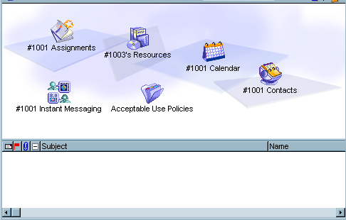
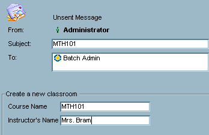
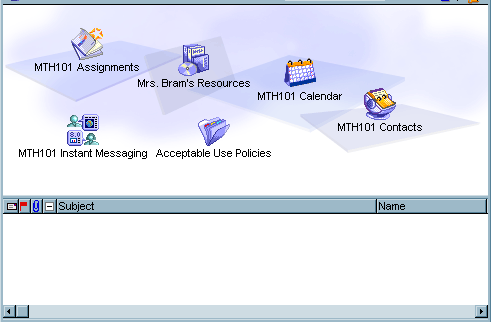

ADD NETWORK/ADD TELECOM
ADD ROUTE
AN
AUDIT
CHGALIAS
COPY
COPYFLD
DEL
DELALL
DELFLD
DIAGNOSEDIR/REPAIRDIR
DIR
DN
ENABLEFIELDSUBSTITUTION
EXIT
EXPORT
IF
GET
GETADMIN
HOLD
LICENSE
LINK PATH
LINK USER
LINK SPECIAL
LIST
NEW
PATHCHAR
PGADD
PGDEL
PUT
PUT PERMISSIONS
PW
REMOVE
RENAME
REPLY
SETEXPORTFILTERS
SETEXPORTOPTIONS
SETOU
SETRELATIVE/RELATIVE/PREVIOUS
SNAPSHOT
UPLOAD
UPDATE
WRITE
ADD NETWORK/ADD TELECOM
Adds a regular (network) user or remote (telecom) user.
Syntax
ADD class userID first i last dept pw postaddr phone1 phone2 UG# UG1...UGn
Parameters
class Network creates a regular user. Telecom creates a remote user.
userID The user ID.
first Optional, unless i is also used. The first name.
i Optional. The initials.
last The last name.
dept Not used; always include a pair of quotation marks in the script.
pw The user's password.
postaddr Optional. The postal address. Use \r to enter a carriage return.
phone1 Optional. The phone number.
phone2 Optional. The fax number.
UG# The number of user groups to follow.
UG1...UGn The user groups to which the user will belong.
Example
To add a regular user Susan A. Bram, with user ID “SBRAM” and password “broccoli”, and to put her into the Employees and East Coast user groups, you would enter:
ADD NETWORK SBRAM Susan A Bram "" broccoli "123 Main St.\rToronto" "" "" 2 Employee "East Coast"
To add remote user Susan A. Bram, with user ID “SBRAM” and password “broccoli”, and to put her into the Employees and East Coast user groups, you would enter:
ADD TELECOM sbram Susan A Bram "" broccoli "123 Main St.\rToronto" "" "" 2 Employee "East Coast"
The \r puts a carriage return in the "Address" field.
 Notes Notes
• If you use the ADD command, and make a mistake in any of the parameters after the <dept> parameter (for example, if you spell the user group name incorrectly), FirstClass still adds an account for that user. To correct this, either delete the account, unsend the message, correct the error, and resend, or correct the information on the user information form.
• If you want a user to be prompted to change his or her password the first time the user logs in, create a password that does not meet the criteria set by the password security.
• One of the most common errors is to exclude the number of user groups (UG#) in the script. The server console will show the phrase "Type a number between 0 and 255" if you fail to include the number of user groups. Another common error is failing to put the names of groups that contain a space in quotation marks. If you mistype the name of a user group, the server console will indicate that the group does not exist, and list error 1081.
• If the user ID already exists, the server console will indicate error 1031.
• If the exact name already exists the server console will indicate error 1080. An example of an exact name would be creating a second Susan A. Bram, with a user ID of susan.
• If there are no Regular licenses available, the server console will indicate error 1018.
Related commands
Use the PUT USER command to create additional scripts that would add information unsupported by the ADD command. For example, the following script would add a mail alias (field ID 1252), a voice DN (field ID 1255), and a voice password (field ID 1256) for Susan Bram:
PUT USER sbram 1252 0 sabram 1255 0 9055551212 1256 0 1212
Top ADD REMOTE
Adds a remote name.
Note
The term 'remote name' refers to the Directory entry for a user on another server. To add a remote user, use ADD NETWORK/ADD TELECOM.
Before you can add a remote name, the site where the user is registered must be defined as a route or gateway.
Syntax
ADD REMOTE first i last dept sitename remoteclientID gateway
Parameters
first Optional, unless i is also used. The first name.
i Optional. The initials.
last The last name.
dept Not used.
sitename The name of the site where the user is registered.
remoteclientID The unique ID for the user. Use this field to distinguish between users with identical names.
gateway The gateway through which to route mail for this user.
Example
To add remote user Allen Smith, who is registered on the Husky Planes Los Angeles server, and whose mail is routed through Husky Planes Boston, you would enter:
ADD REMOTE Allen "" Smith "" "Husky Planes Los Angeles" 1234 "Husky Planes Boston"
Top ADD ROUTE
Adds a route to a remote server.
Syntax
ADD ROUTE name siteID cost gateway
Parameters
name The site name of the remote server.
siteID The serial number of the remote server.
cost The cost (typically 50 per hop).
gateway The gateway to which messages for this server will be delivered.
Example
To define a route for Husky Planes Los Angeles, whose messages are routed through Husky Planes Boston, you would enter:
ADD ROUTE "Husky Planes Los Angeles" 1001030 50 "Husky Planes Boston"
Top
ADD TELECOM
AN
Adds a remote name to your server.
This command is used only by the Directory synchronization process. If you are a developer and require more information, see the FirstClass Gateway Toolkit Developer's Manual.
Top
AUDIT
Performs an audit at a container level. The List Directory also enables you to audit a single user or container. The AUDIT command can be used against containers which are not listed in the Directory.
If a container's summary indicates hidden items, the server console reports an error when the container is opened, or a user reports a missing item, the AUDIT command can be used to perform an audit at the container level.
Items deleted since the last audit will be permanently deleted. If necessary, items can be undeleted before submitting the AUDIT command. Expired items will be tagged for deletion on the next audit. Set the container's expiry date to Never, if necessary.
An audit will only be run on the specified container, not on any subcontainers.
Before the AUDIT command is submitted ensure the container is closed. The server console will indicate if the container is opened. Collaborate > Approve will prevent user's from opening a container.
Syntax
AUDIT path
Parameters
path A container specified by a path relative to the administrator’s Desktop.
DESKTOP userID The location of the form relative to the user’s Desktop. Separate the components of the path with colons. The PATHCHAR command can be used to change the default path character.
Examples
To perform an audit on the Staff Lounge conference within General Conferences, enter
AUDIT "general conferences:staff lounge"
To perform an audit on the Mailbox of the user ID sbram, enter:
AUDIT desktop sbram mailbox
If no message is returned by the server, there is no further action is required. The server may return a message indicating that an item needs to be manually linked to the container, contact Customer Support for additional instructions.
COPY
The COPY command works with variables to enable the administrator to create objects with different names while maintaining the structure, leaf items, aliases, permissions, rules and group membership. The COPY command will copy leaf items, containers, and aliased containers. Permissions, rules, and group membership are also duplicated.
All subscription lists will be empty.
A custom form is required.
Separate the components of the path with colons. The PATHCHAR command can be used to change the default path character.
Important
If the COPY command is used against conferences or calendars without variables, the resulting containers must be renamed before they will function properly.
Note
If you want to create an alias of an existing object rather than a duplicate copy, use the LINK SPECIAL, LINK PATH, or LINK USER commands.
Syntax
COPY currentpath newpath -c
Parameters
currentpath The location of the existing object, relative to the administrator’s Desktop.
newpath The path of new location, relative to the administrator’s Desktop.
c Exclude contents.
{} Allows you to immediately follow the Field ID with a digit.
Examples
You would like to create a conference for every course at your institution. Each course conference has:
• an original folder named Assignments
• an original group calendar
• an alias a school policy folder
• an original public chat object
All of above items need to be created with a personalized names.
First, create a master structure that will be used to create the personalized courses. In this example, there are two variables: the course name and the instructor name.
On the custom form, field ID 1001 contains the course name and field ID 1003 contains the instructor name. Therefore, any object that should be prefixed with the course name is prefixed with #1001. Any object the should be prefixed with the instructor name is prefixed with #1003.
For this example, master course conference is named #1001 Course. The conference contains an original folder, conference, calendar, chat room, contact database and an alias to the Acceptable Use Policies.

The message form to create a MTH101 conference for Mrs. Bram, looks like this.

The message body contains the following command:
//make a copy of #1001 Course conference in the Courses folder
COPY "general conferences:courses:#1001 Course" "general conferences:courses"
After the message is sent, the "MTH101 Course" conference looks like this:

The command can be used to copy containers that do not appear in the Directory, and therefore do not require a unique name.
To copy the contents of a folder on Susan Bram's Desktop to the General Conferences, enter:
COPY desktop sbram "Portfolio" "general conferences"
To copy the contents of a folder on Susan Bram's Desktop to Paul Chu's desktop, enter:
COPY desktop sbram "Portfolio" desktop pchu ""
CHGALIAS
Changes the Internet alias for a user, conference, gateway, or route.
Note
This command replaces the contents of the "Mail Alias" field, it does not amend the field.
Syntax
CHGALIAS name alias
Parameters
name The name of the Directory entry. It can be a registered user, conference, gateway, or route. If a unique name is not provided, the first matching name is used.
alias One or more Internet aliases separated by commas. For gateways and routes, this is the domain name.
Examples
To change Susan A. Bram mail alias to sabram, you would enter:
CHGALIAS "susan a bram" sabram
To change the mail alias of the conference Employee Lounge to lounge, you would enter:
CHGALIAS "employee lounge" lounge
Related commands
The PUT USER command can also be used to change the mail alias (field ID 1252). The PUT USER command uses the User ID, which is always unique.
To change Susan A. Bram to sabram, you would enter:
PUT USER sbram 1252 0 sabram
Top COPYFLD
Copies the contents of a field from one form to another where source field ID and destination field ID are the same.
Syntax
COPYFLD source_objdesc fieldID dest objdesc
Parameters
source_objdesc The source where the form is located
PATH path A form specified by a path relative to the administrator's Desktop. If source_objdesc is missing, PATH is assumed.
DESKTOP userID The location of the form relative to the user’s Desktop.
SYSPROFILE The System Profile.
USER userID The user information form.
CLIENT clientID The user information form specified by the client ID.
DIRECTORY name The Directory form of gateways, conferences, remote names, and user groups.
fieldID The number assigned to the field in FirstClass Designer and listed in the Example.fc file.
dest_objdesc The destination form. Uses the same set of parameters as source_objdesc above.
Example
To copy the address field (1205) from sbram's information form to pchu's, you would enter:
COPYFLD user sbram 1205 user pchu
The user ID can be changed by the administrator, however, the client ID can never be changed, nor is the number ever reused. Systems administrated solely by FC scripting and external databases may prefer to use client ID.
To copy the address field (1205) from sbram's (client ID 1612) User Info formto pchu's (client ID 1602), you would enter:
COPYFLD CLIENT 1612 1205 CLIENT 1602
Top DEL
Deletes a user registered on your server.
Syntax
DEL userID
Parameters
userID The ID assigned to the user.
Example
To delete user Susan Bram, you would enter:
DEL sbram
If the user ID does not match exactly, the command will fail and the server console will indicate error 1003.
Related commands
DELALL
Deletes all routes or remote names from your Directory, or all the routes or remote names at a selected site. After using this command, you should resynchronize directories with the remote site to add all current remote names and routes.
Syntax
DELALL class siteID
Parameters
class REMOTE or ROUTE.
siteID The site ID, or zero for all sites. If you specify a site when deleting remote names, you delete all names originating from that site. If you specify a site when deleting routes, you delete all routes received from that site.
The Directory synchronization process uses the +t option. If you are a developer and require more information, see the FirstClass Gateway Toolkit Developer's Manual.
Example
To delete all remote names for users registered at Husky Planes Boston (site ID 1019026), you would enter:
DELFLD
Deletes field information on forms.
Syntax
DELFLD objdesc fieldID
When used to delete an address field:
DELFLD objdesc addressID index
Parameters
objdesc Describes the target.
fieldID The field ID
addressID "To" field is 4, "Cc" field is 5, "Bcc" field is 14. The "Who", "Access", and "Permissions" field on the Permission form is 29. Disregard the field IDs displayed in the FirstClass Designer for these fields.
index Position to insert in the list. Use zero for the first name, 1 for the second name and so on.
address The name of the Directory entry. It can be a registered user, email address, conference, calendar, remote name, gateway, or route. If a unique name is not provided, the first matching name is used.
Additional parameters:
PATH path A form specified by a path relative to the administrator’s Desktop. If objdesc is missing, PATH is assumed.
DESKTOP userID path The location of the form relative to the user’s Desktop. Separate the components of the path with colons. The PATHCHAR command can be used to change the default path character.
SYSPROFILE The System Profile.
USER userID The user information form.
DIRECTORY name The Directory form of gateways, conferences, remote names, and user groups.
PERMISSIONS path The Permission form of a conference or calendar.
Examples
To delete the sixth entry from a mail list, enter:
DELFLD path "Mail Lists:London" 4 5
The 4 in the command represents the "To" field. The 5 represents the sixth entry in the mail list.
To delete all entries in the mail list, enter:
DELFLD path "Mail Lists:London" 4 -1
To delete the Mail alias (field ID 1252), voice DN (field ID 1255), and Voice password (field ID 1256) from sbram's user information form, enter:
DELFLD user sbram 1252 1255 1256
To delete the first entry in the Employee Lounge conference's Permissions form, enter:
DELFLD permissions "General Conferences:employee lounge" 29 0
To all entries from the Employee Lounge conference's Permissions form, enter:
DELFLD permissions "General Conferences:employee lounge" 29 -1
To update the "Belongs to" field use the PGADD or PGDEL commands. The subscription list is not supported by the DELFLD command.
Top
DIAGNOSEDIR
The Directory entries are a key part of a user's account. Be sure to have a current backup before starting a Directory repair. We recommend you contact FirstClass Customer Support before beginning this process.
Performs Directory diagnostics on a live server. Replaces functionality previous performed by FirstClass Tools. A diagnosis of Directory items should be performed when there seems to be damage to user records, specifically if users or conferences can't be accessed through the Directory when you know they exist.
To isolate a Directory issue, you should begin by searching for the address in three different ways. Using Admin > List Directory, search by name, user ID, and CID. For Example, Susan Bram cannot log into the server even though her name appears in the Directory. To confirm a Directory issue, you would set the "Search" field to Name and search for Susan Bram. Then set the "Search" field to User ID, and search for sbram. Lastly, you would search for Susan's CID 1707. Only if one of the searches fail do you have a directory issue.
The Directory is made of three redundant databases. The DIAGNOSEDIR command is used to find a valid entry in one of the three databases. Once located, the valid entry is copied to the other two indices with REPAIRDIR.
The REPLY command is required. Within Administration > Admin Resources, you'll find a special form and script to aid in Directory Diagnosis and Repair.
Sytnax
REPLY
DIAGNOSEDIR dirdesc pattern CID option
Parameters
dirdesc Index, Client, User, Gateway, Conference, Calendar, MailList, Remote, Group, or Route
pattern Optional; the string you want to search for.
CID Required when using the Client dirdesc. Optional when using any other dirdesc.
+n Treats the specified pattern as a name and will search the Name index.
Examples
To isolate a Directory that has a valid entry for Susan Bram, submit the following commands.
REPLY
//Checks the UserID index
DIAGNOSEDIR USER sbram
//Checks the CID index
DIAGNOSEDIR CLIENT 1707
//Checks the Name index, the CID is included to ensure the correct user named Bram is examined, +n is required
DIAGNOSEDIR USER "bram" 1707 +n
The server would return the following:
Diagnostic report for parameters: USER sbram
[1] (1707) "sbram" Susan Bram
SUMMARY:
1 entries were diagnosed.
0 problems found.
If one of the three parameters reports a problem, it is fixed with REPAIRDIR command.
If advised to do so by FirstClass Customer Support, you can run diagnostics for an entire index.
To diagnose the Name index, enter:
REPLY
DIAGNOSEDIR index name
To diagnose the Client ID index, enter:
REPLY
DIAGNOSEDIR index cid
To diagnose the Name index, enter:
REPLY
DIAGNOSEDIR index userid
Top REPAIRDIR
The Directory entries a key part of a user's account. Be sure to have a current backup before starting a Directory repair. We recommend you contact FirstClass Customer Support before beginning this process.
After the DIAGNOSEDIR command has located an index that is error free, the REPAIRDIR command is used to copy the entry to the other two indices.
The REPLY command is required. Within Administration > Admin Resources, you'll find a special form and script to aid in Directory Diagnosis and Repair.
The REPLY command is required.
Sytnax
REPLY
REPAIRDIR dirdesc pattern ClientID option
Parameters
dirdesc Index, Client, User, Gateway, Conference, Calendar, MailList, Remote, Group, or Route
pattern Optional; the string you want to search for.
ClientID Required when using the Client dirdesc. Optional when using any other dirdesc.
+n Treats the specified pattern as a name and will search the Name index.
Examples
The Client index is error free, to duplicate the correct entry to the other two indices, send the following command.
REPLY
REPAIRDIR client 1707
The server returns:
Repair report for parameters: client 1707
Repaired:[1] (1707) "sbram" Susan Bram
The Name index is error free, to duplicate the correct entry to the other two indices, send the following command:
REPLY
REPAIRDIR USER Bram +n
The server returns:
Repair report for parameters: USER Bram +n
Repaired:[1] (1707) "sbram" susan bram
DIR
Returns a list of containers and leaf items. Also returns a summary of how many files and folders, the last modified dates, and the disk usage assigned to the container. The REPLY command is required. The index number is also returned for use with the BYINDEX keyword.
Syntax
DIR path +lbpsr
Parameters
path The location of the new object, relative to the administrator’s Desktop. Separate the components of the path with colons. The PATHCHAR command can be used to change the default path character.
DESKTOP userID path Creates an object on a user's Desktop. The path is relative to the user's Desktop.
l Include leaf items
b Include containers
p Full path displayed
s Include size (per item)
d Include date (per item)
r Include reference number (per item)
Example
To retrieve a summary of container, you would enter
reply
dir "general conferences:employee lounge" +bl
The server would return:
Contents of: "general conferences:employee lounge"
[B:0] "Message Archive" ""
[B:1] "Away Today" "Faculty"
[B:2] "Employee Calendar" ""
[L:4] "Susan Bram" "Customer Update"
[L:5] "Susan Bram" "Fire Drill Procedures"
[L:6] "Susan Bram" "Welcome Paul Chu"
Summary:
Files: 3 Size: 64 kb Last file modified on: 2004/05/17 08:40:26
Folders: 3 Last folder modified on: 2002/06/11 13:41:45
The BYINDEX keyword can be used to work with any of the above items. For example, to protect the message "Welcome Paul Chu", you would send the following command.
PUT PROPERTIES BYINDEX 6 "General conferences:employee lounge" 1016 6 1
The BYINDEX number is only valid until a addition or deletion occurs. A new message posted to the conference would change all the index numbers.
To retrieve a list items on Susan Bram's Desktop, you would enter:
REPLY
DIR DESKTOP SUSAN "" +lpb
The server would return:
Contents of: DESKTOP sbram ""
[B:0] "MailBox" ""
[B:1] "Calendar" ""
[B:2] "Help" ""
[B:3] "My Web Site" ""
[B:4] "Contacts" ""
[B:5] "My Shared Documents" ""
[B:6] "My Documents" ""
[B:7] "School Area" "Model Desktop"
[B:8] "Student Area" "Model Desktop"
[B:9] "Susan Bram's Student Portfolio" ""
[B:10] "Employee Lounge" "Model Desktop"
Summary:
Files: 0 Size: 0 kb Last file modified on:
Folders: 11 Last folder modified on: 2004/05/12 20:08:36
Top
DN
Deletes a remote name registered on your server
This command is used only by the Directory synchronization process.
Top
ENABLEFIELDSUBSTITUTION
Field data from forms sent to Batch Admin replace '#' field identifiers found in the body of the message. This option is disabled by default but can be enabled by using the EnableFieldSubstitution command. Subsequent lines will be preprocessed replacing '#' field identifiers with the data found in the identified field.
After enabling the preprocessing, if a '#' is required as part of a string it must be preceded by a '\'.
Syntax
EnableFieldSubstitution
#eld ID>
#{<Field ID>}
Parameters
<Field ID> Must be numeric.
{} Allows you to immediately follow the Field ID with a digit.
Examples
In order the take full advantage of field substitution, you will need to create custom forms.
For example, every time you create a new conference to support employee training, you:
1 Create a conference.
2 Create a public chat.
3 Create a stationery that is preaddressed to the instructor.
4 Create a group calendar.
5 Set the permissions of the conference: instructor is the controller, employees are contributors, and all users are disallowed.
6 Set the permissions of the group calendar: instructor is the Editor, employee are Schedule+Details, and all users are disallowed.
You could create a local form that contained the standard address fields. The editable fields added to the form are the name of the course (field ID 1000) and the name of the instructor (field ID 1001).
To fill in the name of the course as "Power Presentations" (field ID 1000) and the name of the instructor as "Susan A. Bram" (field ID 1001), the body of the message contains the following script (lines starting with // are comments and are optional):
enablefieldsubstitution
//create a new conference, the name of the conference
//will be based on the content of field id 1000
NEW "General Conferences" "#1000" "" CONFERENCE 8 -1 -1 +p
//create a public chat called Power Presentations Chat"
//the path is based on the contents of field ID 1000
NEW "General Conferences:#1000" "#1000 Chat" "" CHAT 150 180 50 129 +p
//Create a new message stationery
NEW "General Conferences:#1000" "Message to Instructor" "" PERMS 7010 60 50 141
//Add name to the To field of the Message to Instructor stationery.
//The name is based on the content for field ID 1001
PUT "General Conferences:#1000:message to instructor" 4 0 "#1001"
//Create a new calendar called Power Presentations Calendar
NEW "General Conferences:#1000" "#1000 Calendar" "" CONFERENCE 24011 325 50 21 +p
//Set permissions of the Power Presentations conference
PUT PERMISSIONS "General Conferences:#1000" 29 0 "#1001" 131071 29 1 employee 122624 29 2 "all users" 0
//Set permissions of Power Presentations Calendar
PUT PERMISSIONS "General Conferences:#1000:#1000 calendar" 29 0 "#1001" 2219821 29 1 employee 2100992 29 2 "all users" 0
Supported field types
These include the first entry in the From field, and the first entry in Attachments field (7). The following is a list of the most common fields you can add to a custom form:
Editable fields Contents of field is substituted in the script. For example, names of conferences or groups.
Editable Selection Lists Presents administrator with a predefined list. For example, a list of pictures available for use as background picture for a conference. FirstClass Designer allows you to limit this type of field to "Choose from List Only". For more information, see FirstClass Designer.
Icon fields Presents the administrator with the Icon picker. For example, you could include an Icon field in forms that create new objects. You would then be able to choose the icon from the icon picker instead of submitting the icon ID.
Number fields Eliminates the need for {} to differentiate numbers from field IDs.
Top EXIT
Stops the server from processing any further information. It is used when submitting commands with a POP3 client.
Syntax
EXIT version
Parameters
version Optional. Server version number. processing is stopped if the server version is not equal or greater the version number.
Example
To stop processing a script if the server is not a 8.0 server, you would enter
EXPORT
Generates a cross-platform FirstClass script based on existing objects on your server. Only the Admin account can submit EXPORT commands. Separate the components of the path with colons. The PATHCHAR command can be used to change the default path character.
Subscription lists and group membership are not included in script returned by the server.
Syntax
• for generating a script
EXPORT path name +rnpe -cv
• for generating and executing a script
EXPORT path address BatchAdminPassword ObjDesc +b
Parameters
path Target path is relative to the administrator's Desktop.
Desktop userID path Target path is relative to the user's Desktop.
name Optional. The Directory name of the user or conference. The script is returned to the sender if the name parameter is not included.
address The name of the user that processes the batch admin command. Typically, within the same server, the parameter would be "batch admin".
ScriptPassword Optional. The password required to process scripting commands.
ObjDesc The target path.
+r Recursive, exports subconferences and subfolders.
+b Process script immediately. Used only with when generating and exporting objects in a single step.
+h Includes history records.
+n Includes target path container.
+p Includes the Who section of the permission form. All other supported fields on the permission form are included by default. Does not include subscription lists or group membership.
+e Includes container rules and resources.
-c Excludes messages, documents, and files.
-v Excludes view properties.
To use the EXPORT command:
1 Send a message addressed to Batch Admin containing a valid EXPORT command.
FirstClass will extract the appropriate information and use it to generate an import script.
2 Create a forwarded copy of the message and address it to Batch Admin.
3 Replace <ObjDesc> with the destination path in the message body.
Conferences, calendars, gateways, groups, and mail lists require unique names.
Chats, folders, messages, conference items, documents, uploaded files, stationery, calendar tasks, and calendar events do not require unique names, and therefore no adjustments are necessary.
Note
The destination folder, conference, or calendar must exist. It can be created manually with the NEW command, or by including the +n option in the EXPORT command. If your server console reports "object not found" errors, the path may not exist or it may have been typed incorrectly.
4 Send the message.
EXPORT will not include:
• aliases of folders, conferences, or calendars (use LINK SPECIAL to recreate)
• The Who section of the permission form can be included with the script, however conference group membership and the list of subscribers are not included.
If you are sending the outgoing scripts through your Internet gateway, ensure that your outgoing line length is set to accomodate the line length of the script. This field is found on the Outbound tab of the Advanced Mail form within the Internet Services folder. If your server console reports object not found errors, you may not have your line length high enough.
You can use the EXPORT command to help you create scripts that create new objects and enter field data. For example, say you want to create 50 new conferences but don't know what the correct syntax is:
1 Create a folder within general conferences called BATest.
2 Send the following command
EXPORT "general conferences:batest" +rn -vc
4 The server will return:
New Relative "" "batest" "" Conference 8 491 82
5 Replace Relative "" with your path, and test with the name of your conference.
New "general conferences" "Employee Lounge" "" Conference 8 -1 -1
Note
See SETEXPORTFILTERS for instructions on how to limit the import script based on last modified or thread ID. See [Link]SETEXPORTOPTIONS for instruction on how choose the attachment name.
Example list
Export a conference with various options
Export object from a user Desktop
[Link]Export rules
The Employee Lounge conference is located in the General Conferences folder. It contains messages, documents, uploaded files, a subconference, a folder, and a calendar.
To have the server return a script that would include (in addition to all the messages, documents, calendar items, and uploaded files) the conference, folder, and calendar contained in the Employee Lounge conference, and the view properties of the Employee Lounge conference, you would enter:
EXPORT "general conferences:Employee Lounge" +r
To generate and process the script in one step, you would enter:
EXPORT "general conferences:employee lounge" "batch admin" "" "general conferences:management area" +br
To have the server return a script that would include the Who section of permission forms (+p) of the subconferences and calendars, you would enter:
EXPORT "general conferences:Employee Lounge" +rp
The above script would not include the command to create a conference called Employee Lounge or any of the contents of the permission form of Employee Lounge.
To have the server return a script that would include the Who section of the permission forms of the subcontainers, but no content (-c) or view properties (-v), you would enter:
EXPORT "general conferences:Employee Lounge" +rp -cv
The script would not include the command to create an Employee Lounge conference or the permissions of Employee Lounge.
To have the server return a script that would include the Who section of the permission form (+p) of the Employee Lounge conference (+n), but not the subcontainers (the absence of +r), not the content (-c), and not the view properties (-v), you would enter:
EXPORT "general conferences:Employee Lounge" +pn -cv
To have the server return a script that would include the rules (+e) of the Employee Lounge conference (+n), but not the subcontainers (the absence of +r), not the content (-c), and not the view properties (-v), you would enter:
EXPORT "general conferences:Employee Lounge" +en -cv
To have the server return a script that would recreate an additional Employee Lounge conference (+n), the Who section of the permission forms (+p), the rules (+e), and all the recursive containers (+r). All the recursive containers' rules, content, permissions forms, and view properties would also be returned. Content and view properties are included by default.
EXPORT "general conferences:Employee Lounge" +nper
To have the server return a script that would recreate an additional Employee Lounge conference (+n), the Who section of the permission forms (+p), the rules (+e), and all the recursive containers (+r). The permissions and rules of the recursive containers would also be included. To exclude content (-c) and view properties (-v), you would enter:
EXPORT "general conferences:Employee Lounge" +nper -cv
EXPORT DESKTOP examples
To export the contents of sbram's Contacts folder to pchu's Contacts folder, submit the following command:
EXPORT DESKTOP sbram "Contacts"
When the server returns the script, forward the message and replace <ObjDesc> with the following:
DESKTOP pchu "Contacts"
To export the contents of sbram's Contacts folder to pchu's Contacts folder in one step, submit the following command:
EXPORT DESKTOP sbram "Contacts" "batch admin" "" DESKTOP pchu "Contacts" +b
To export the Voice Menus folder from sbram's Voice Greetings folder to pchu's existing Voice Greetings > Voice Menus folder in one step, submit the following command:
EXPORT DESKTOP sbram "voice greetings:voice menus" "batch admin" "" DESKTOP pchu "voice greetings:voice menus" +b
Rules have limited support with FC Scripting, you are able to create and modify existing rules, but FC Scripting does not support the deletion of rules.
To export the mailbox rules from sbram's mailbox to pchu's mailbox, submit the following command,
EXPORT DESKTOP sbram "mailbox" +ne -cv
If the Rules moves items to a folder, ensure the folder exists before creating the rule.
When the server returns the script, forward the message and make the following changes:
• change the <ObjDesc> to DESKTOP pchu
• comment out the commands that create the mailbox and set the permissions
• add command to create Conference Mail folder within Paul's Mailbox
//add a folder to mailbox
NEW DESKTOP pchu "mailbox" "Conference Mail" "" folder 26093 -1 -1
SetBase DESKTOP pchu
SetRelative FromBase Path ""
//New Relative "" "MailBox" "" Conference 23009 60 57 +P
//Put Permissions Relative "MailBox" 1012 7 0 1006 14 0 1004 14 0 2008 7 0 1000 6 0 1002 6 0 1001 6 0 1007 7 0 2009 7 6
SetBase FromBase Path "MailBox"
SetRelative FromBase Path ""
// Reference: 1:20134
New Relative "" "File in Folder" "" FormDoc 23047 112 15 23 23 -U+X
Put Previous 8120 7 1252 8140 0 8141 0 9 ""
Put Previous 13801.0 7 1 13810.0 7 11 13806.0 7 21 13821.0 7 2 13830.0 7 1 13832.0 0 "Conference Mail"
Put Properties Previous 13801 7 1
Put Properties Previous 13830 7 1
Put Properties Previous 1018 14 -1127673958
Compile Relative ""
SetRelative FromBase Path ""
IF, ELSE, ENDIF
These commands add logic flow to FC scripting. For every IF command, a matching ENDIF comand must be included, if this is not the case the script will not be executed. For every IF command, zero or one ELSE command is expected, if this is not the case the script will not be executed.
There is little value in creating IF commands just to avoid warning messages. For example, if you want to remove a folder from users desktops, but aren't sure whether the folder exists. It is more effecient to write a script to remove the folder, even if it isn't there, than have FC scripting first check for its exsistence before deleting.
Or perhaps, you want to enable the unlisted feature on a number of User Info forms. Even if you suspect a few of the users already have unlisted enabled, it is far more efficient to simply enable the field for every user, than it is to first check the state of the checkbox. Your scripts will be much easier to write, and the server has to less work to do.
Syntax
IF Expression Test Expression
commands to execute if condition evaluates to true
ELSE
commands to execute if condition evaluates to false
ENDIF
Parameters
OBJECT path EXISTS Checks the existence of a specified object
OBJECT path MISSING Determines the absence of a specified object
FIELD FieldID EXISTS Field contains data on the form accompanying the script
FIELD FieldID MISSING Field does not contains data on the form accompanying the script
FORMFIELD path FieldID EXISTS Checks if a field on any other form contains data
FORMFIELD path FieldID MISSING Checks if a field on any other form does not contain data
FIELD FieldID test fieldvalue Checks the contents of the field on the form accompanying the script against the specified pattern
FIELD FieldID test FIELD FieldID Compares the contents of two fields on the form accompanying the script
FORMFIELD path FieldID test fieldvalue Checks the content of a field on any other form, defined by path.
test for numeric comparison, one of the following
< less than
< less than or equal to
== equal to
=! not equal to
>= greater than or equal to
> greater then
path The location of the object, relative to the administrator’s Desktop. Separate the components of the path with colons. The PATHCHAR command can be used to change the default path character.
DESKTOP userID path An object on a user's Desktop. The path is relative to the user's Desktop.
fieldID The field ID.
fieldvalue The field value. May be enclosed in quotes if needed. The field value must be numeric for Checkbox, Popup and Number. Popup values can be found using FirstClass Designer.
Object examples
Before writing a complex script, you may find it helpful to start by confirming the IF command returns the expected results.
The following script will returns a message containing either True or False, depending on the existence of Employee Lounge conference within General Conferences.
IF OBJECT "General Conferences:Employee Lounge" EXISTS
WRITE True
ELSE
WRITE False
ENDIF
This simple step will eliminate the IF command when debugging your script. In this example, if False is returned, look syntax or typing errors.
Within Employee Lounge there is a Contact Database, and you want create an alias of this in all the Contacts folders of your sales staff. You know that some Sales staff have already done this, but you want to make sure every team member has the Contact Database. In addition, the name of the Contact Database had changed from Customers to East Coast Customers. So there are two issues to solve, renaming existing alias and creating an alias if one doesn't exist.
//Check to see if a user has an alias to Customers in the Contacts folder
IF OBJECT desktop sbram "Contacts:Customers" EXISTS
// if the above statement is true then rename
rename desktop sbram "Contacts:Customers" "East Coast Customers"
ELSE
//if the above is false, create the alias.
LINK SPECIAL desktop sbram "Contacts" "General Conferences:Employee Lounge:East Coast Customers"
ENDIF
Formfield examples
Your custom form contains a checkbox, field ID 1000, and depending on its fieldvalue, two different scripts will run.
IF FORMFIELD "General Conferences:Employee Lounge:Event form" 1000 == 1
\\if value is equal to one execute the following commands
ELSE
\\if value is not equal to 1, then execute the following commands
ENDIF
Your custom form contains a checkbox, field ID 1000, and if its fieldvalue is equal to 1, than a script is executed. If the value is not equal to 1 then there is nothing to do, therefore no ELSE is included.
IF FORMFIELD "General Conferences:Employee Lounge:Event form" 1000 == 1
\\if value is equal to one run execute the following commands
ENDIF
Your custom form contains a checkbox, field ID 1000, and if fieldvalue is equal to 1, than a script is executed. If the value is not equal to 1 then you want the script to terminate.
IF FORMFIELD "General Conferences:Employee Lounge:Event form" 1000 == 1
\\if value is equal to one run execute the following commands
ELSE
\\if value is not equal to 1, then stop processing commands here
ENDSCRIPT
ENDIF
Field Examples
You want use a custom form to create conferences. A stationery will have the script in the body of the message. A selection list (field ID 1000) is used to set the view properties of the new conference, the choices will be vertical or horizontal.
Determining how the server is storing for field data is a useful first step.
1 Upload the settings file to your admin Desktop, and double click to add the form to your current settings file.
2 Choose Message > New Message Special.
3 Fill out the form.
4 Drag the unsent form to a new folder, in this example named, Form Tests
5 Send an Export command:
EXPORT "form tests" -v
Examine the results to determine how the server is storing the field data. If the server doesn't not return the field, the field may have been left at the default value.
You may want to create a set of forms that represent all the possible choices.
In the above example, if the field set to vertical, which is the default, the field contains no data. When set to horizontal, the field value is horizontal.
Any of the following commands can used.
IF FIELD 1000 EXISTS
\\The field has data, so set the conference to an horizontal split
ELSE
\\Field ID has no data, so set the conference to a vertical split
ENDIF
or
IF FIELD 1000 MISSING
\\Field ID has no data, so sent the conference to a vertical split
ELSE
\\Field has data, so set the conference to an horizontal split
or
IF FIELD 1000 == horizontal
\\The field is equal to horizontal, so set the conference to an horizontal split
ELSE
\\Field ID is not equal to horizontal, so set the conference to a vertical split
ENDIF
Note
If the form did not contain a field 1000, than the IF command would consider it missing.
The same form also has a field (Field ID 1001) where the conference name is entered, and you want the IF command to terminate if you send the form without filling the conference name. This script uses nested IF commands.
IF FIELD 1001 MISSING
REPLY
WRITE The script did not run because the conference name is missing.
ENDSCRIPT
ELSE
ENABLEFIELDSUBSTITUTION
NEW "general conferences" "#1002" "" CONFERENCE 8 -1 -1 +p
\\this part of the script contains the commands to set view properties
IF FIELD 1000 == horizontal
\\The field is equal to horizontal, so set the conference to an horizontal split
ELSE
\\Field ID is not equal to horizontal, so set the conference to a vertical split
ENDIF
ENDIF
Your script compares the value of a field on the form accompanying the script, and a field on another form.
IF FIELD 1000 == FORMFIELD "general conferences:employee lounge:Event form" 1001
GET
Extracts data from FirstClass objects at the field level. GET returns a single line of field triplets (fieldID, fieldtype, fieldvalue), one triplet per field ID requested, in a format that matches the PUT command fieldlist. The REPLY command must precede GET. For additional information, see the PUT command. Separate the components of the path with colons. The PATHCHAR command can be used to change the default path character. If objdesc is missing, PATH is assumed.
Syntax
REPLY
GET objdesc fieldIDs +d +D
• when used to retrieve address fields:
REPLY
GET objdesc addressID index
Parameters
objdesc Describes the target. Available objdesc are as follows:
ABOUT containername A conference or calendar résumé.
CLIENT clientID The user information form specified by the client ID. The Directory form of remote names and routes.
path An object specified by path, relative to the administrator’s Desktop.
DESKTOP userID path An object relative to the user's Desktop. Separate the components of the path with colons.
PREFERENCES userid A user’s Preferences form and Print Layout form.
PROPERTIES path Used to retrieve information from the Get Info form for Mac OS or Properties form for Windows. The path is relative to the administrator's Desktop.
PROPERTIES byindex indexnumber path Used to retrieve information from the Get Info form for Mac OS or Properties form for Windows.
PROPERTIES byindex indexnumber DESKTOP userID path Used to retrieve field information from the Get Info form for Mac OS or Properties form for Windows.
PROPERTIES byindex indexnumber path Used to retrieve information from the Get Info form for Mac OS or Properties form for Windows. The DIR command is used to retrieve the index number. The path is relative to the administrator's Desktop.
PROPERTIES byindex indexnumber DESKTOP userID path Used to retrieve field information from the Get Info form for Mac OS or Properties form for Windows.The DIR command is used to retrieve the index number.
PERMISSIONS path The permission form on a conference, calendar, or contact database The path is relative to the administrator's Desktop.
PERMISSIONS DESKSOP userID path The permission form on a conference, calendar, or contact database The path is relative to the user's Desktop.
USER userID The user information form specified by the user ID: USER userID.
USERCONFIG userID Used to retrieve field information from the Mail Import form.
RESUME userid A user’s résumé.
RULES path rulename A container's Rule folder. Path is relative to the administrator's Desktop.
RULES DESKTOP userid path rulename A container's Rule folder. Path is relative to the user's Desktop.
SYSPROFILE The System Profile.
fieldIDs The field IDs of the fields to be retrieved. Field IDs can be obtained from the Example.fc file that installs with FirstClass Designer.
+d +D Optional and case sensitive. +d will return the time as formatted in the client. +D will return the time formatted to system default. These parameters can be used with the "Created" (field ID 1235) and "Last logged in" (field ID 1230) fields on the user information form.
addressID "To" field is 4, "Cc" field is 5, "Bcc" field is 14. The permission's form "Who" field is 29. Do not use the field IDs displayed in FirstClass Designer for these fields.
index Position in the list. Use zero for the first name, 1 for the second name and so on. Use -1 to retrieve all address entries.
GET ABOUT example
To retrieve About form's title (field ID 1000) and the body (field ID 6), enter:
REPLY
GET ABOUT "employee lounge" 1000 6
About and Résumé use a form named Résumé (form ID 97).
GET CLIENT examples
The user ID can be changed by the administrator, however, the client ID can never be changed, nor is the number ever reused. Systems administrated solely by FirstClass scripting and external databases may prefer to use client ID.
Susan Bram's client ID is 1602. To get sbram's user ID (field ID 1201), first name (field ID 1202), middle initial (field ID 1203) and last name (field ID 1204) fields based on the client ID, enter:
REPLY
GET CLIENT 1602 1201 1202 1203 1204
The server returns the following information:
1201 0 "sbram" 1202 0 "Susan 1203 0 "A" 1204 0 "Bram"
The client ID can also be used to retreive information from the Directory forms including those supported by the DIRECTORY keyword. The CLIENT keyword allows you to retrieve information from the Directory form of remote names and routes.
To retrieve the mail alias field from a Remote name with the client ID of 1956, enter
REPLY
GET CLIENT 1956 1252
Note
The client ID displayed in remote user's Directory form is that of the remote site. Use the List Directory to obtain the correct client ID for your site.
To retrieve the primary domain name (field ID 1001) from the Basic Internet Setup form, enter:
REPLY
GET "internet services:basic internet setup" 1001
Susan Bram posts the majority of events to the Employee Calendar. Most commands work with an object's name but with this calendar, every event has the same name - Susan Bram. The PATHCHAR command can be used to work the subject or description, however this calendar has events with the same description, so the BYINDEX keyword can be used.
The following command is sent to retrieve the index number:
REPLY
DIR "general conferences:employee lounge:employee calendar" +pld
The server would return:
Contents of: "general conferences:employee lounge:employee calendar"
[L:2] "Susan Bram" "All Staff Fire Drill" 2004/05/17 09:06:48
[L:3] "Susan Bram" "Lunch & Learn" 2004/04/17 09:08:28
[L:4] "Susan Bram" "Fund Raising Meeting" 2004/05/17 09:09:24
[L:5] "Susan Bram" "Lunch & Learn" 2004/05/17 09:45:43
To work with the Lunch & Learn event from April, enter the following command:
REPLY
DIR BYINDEX 3 "general conferences:employee lounge:employee calendar" 1009
To work the info form for the same event, enter the following:
REPLY
DIR PROPERTIES BYINDEX 3 "general conferences:employee lounge:employee calendar" 1016
To work with a calendar on Susan Bram's desktop, the command would be:
REPLY
GET PROPERTIES byindex 3 desktop sbram "calendar" 1016
See the DIR command for more information.
To retrieve the body of Susan's Home Page within the My Web Site folder, enter:
REPLY
GET DESKTOP sbram "my web site:home page" 6
GET PERMISSIONS
Example
To retrieve the first entry of the Who section of a contact database permission form:
REPLY
GET PERMISSIONS "General Conferences:Employee Lounge:Customer List" 29 0
To retrieve the all entries of the Who section of a contact database permission form:
REPLY
GET PERMISSIONS "General Conferences:Employee Lounge:Customer List" 29 -1
The above examples are applicable to conferences and calendars.The subscription list and the "Belongs to" field are not supported by the GET command.
To retrieve the Reply text (field ID 1106) enter:
REPLY
GET PREFERENCES sbram 1106
Notes
• Fields with a value of greater than 10000 cannot be retrieved.
• Default values are not stored. For example, if the user's reply preference is the default Automatic, the reply will be empty.
GET PROPERTIES example
To retrieve the icon ID (field ID 1304), name (field ID 1017), location (field ID 1020), creator (field ID 1043), and determine if the Employee Lounge conference is protected (field ID 1016), enter:
REPLY
GET PROPERTIES "General Conferences:employee lounge" 1304 1017 1020 1043 1016
Susan has created a conference called Presentations on her Desktop. To retrieve the icon ID (field ID 1304), name (field ID 1017), location (field ID 1020), creator (field ID 1043), and determine if the conference is protected (field ID 1016), enter:
REPLY
GET PROPERTIES DESKTOP sbram presentations 1304 1017 1020 1043 1016
For additional field IDs, see the Get Info form (form ID 111) and Folder Info (form ID 92).
To get user sbram's user ID (field ID 1201), first name (field ID 1202), middle initial (field ID 1203)and last name (field ID 1204) fields, enter:
REPLY
GET USER sbram 1201 1202 1203 1204
The server returns the following information:
1201 0 "sbram" 1202 0 "Susan 1203 0 "A" 1204 0 "Bram"
Asking for the user ID to be included in the reply message will identify to which user the information pertains. Asking for multiple fields in a single command puts less load on the server than submitting multiple commands.
Only the main admin account can retrieve data from the "Password" field (field ID 1217). To retrieve Susan's password, enter:
REPLY
GET USER sbram 1201 1217
The server returns the following information:
To retrieve the date and time Susan last logged in, enter:
REPLY
GET USER sbram 1201 1230 +d
If the server returns a date of January 1, 1904, the user has never logged into the server.
If you want to know which groups a user is a member of, you need to retrieve data from the "User groups" field. This field is a "To" field, therefore the field ID is 4 and no field type is required.
REPLY
GET USER sbram 4 -1
The server will return the following information:
4 0 "Regular Users"
4 1 "Employee"
4 2 "East Coast"
If you want to know the second group Susan is a member of, enter:
REPLY
GET USER sbram 4 1
For additional field IDs, see the User Info, form ID 125.
GET USERCONFIG example
To retrieve the icon ID (field ID 2005), mail server (field ID 2000), user name (field ID 2001), password (field ID 2003), and email address (field ID 2004) from Susan Brams' Internet Mail Import form, enter:
REPLY
GET USERCONFIG sbram 2005 2000 2001 2002 2003
For additional field IDs, see Message Import Setup, form ID 68.
GET RESUME example
To retrieve Susan Bram résumé title (field ID 1000) and the body (field ID 6), enter:
REPLY
GET RESUME sbram 1000 6
About and Résumé use a form named Résumé (form ID 97). Field ID 1001 is not supported by FirstClass scripting.
GET RULES example
To determine if the File in Folder Rule is enabled or disabled (field ID 13800) enter:
REPLY
GET RULES "General Conferences:employee lounge" "File in Folder Rule" 13800
An empty reply the rule is set to the default - enabled.
To retrieve the message body (field ID 6) of the Rules Log document, enter
REPLY
GET RULES "General Conferences:employee lounge" "Rules Log" 6
To retrieve the message body (field ID 6) of the Rules Log document from Susan Bram's Mailbox, enter
REPLY
GET RULES DESKOP sbram "mailbox" "Rules Log" 6
GET SYSPROFILE example
To retrieve the contents of the "Create users and conferences on this volume" field (field ID 1224) server serial number (field ID 1217) and version number (field ID 1202) from the System Profile, enter:
REPLY
GET SYSPROFILE 1224 1217 1202
For additional field IDs, see the System Profile, form ID 122.
The GET command can help you create PUT commands. For example, if you want to add a voice DN (field ID 1255) and voice password (field ID 1256) to all your users, you could use the GET command to help you create the PUT syntax:
1 Open Example.fc using FirstClass Designer.
2 Open the User Data form (form ID 125) and look up the field IDs.
3 Fill in the voice DN and voice password of any user.
4 Send a GET command:
reply
GET USER sbram 1255 1256
The server will return the field ID, field type and field value:
1255 0 "9055551212" 1256 0 "1212"
5 Compose the PUT command by replacing the field value with appropriate data. To add a voice DN and voice password to Paul Chu's account:
PUT USER pchu 1255 0 "9055551213" 1256 0 "1213"
Related commands
To change fields, see the PUT command.
To create objects, see the NEW command.
To work with objects based on the index number, see the DIR command.
To generate a scripts that would include all field IDs, see the EXPORT command.
Top
GETADMIN
Finds the user ID of the the main administrator of a system. You may find this command useful if you use automated administration software to keep FirstClass synchronized with other server software. Use this command in conjunction with the REPLY command.
Syntax
REPLY
GETADMIN
TopLICENSE
Used with FirstClass license files to upgrade your system without shutting down the FirstClass server. The license files can also be used with FirstClass Tools.
Syntax
LICENSE operation licensenumber
Parameters
operation ADD or REMOVE
licensenumber License number of the license file.
Examples
LICENSE ADD 123456789.KEY
LICENSE REMOVE 987654321.LIC
Top
HOLD
The ability to hold the server in a known (static) state, allowing for a snapshot of the store, until its release. Once the hold has been initiated, the server will not respond to most requests until the hold has been released manually or the allotted time (Default: 60 seconds) has expired. The server console can also initate a hold.
Syntax
Hold OptionalHoldTime
OptionalHoldTime Total amount of time, in seconds, until the server will release the hold. If not specified the default is 60 seconds.
Example
To initiate a hold for 2 minutes, send the following command:
HOLD 120
Note
Once this command is submitted the server can only be released at the server console. No further messages can be created to release the hold until the time expires.
Top
LINK PATH
Makes an alias of container and places it in another conference or folder. This command cannot be used to create a link to an object of a user's Deskop, see LINK SPECIAL. Separate the components of the path with colons. The PATHCHAR command can be used to change the default path character.
Syntax
LINK PATH newpath currentpath
Parameters
newpath The desired location of the new link, relative to the administrator’s Desktop.
currentpath The location of the existing object, relative to the administrator’s Desktop.
Example
To create an alias in the Management conference of the Existing Policies conference located in the General Conferences folder, you would enter:
LINK PATH "General Conferences:Management" "General Conferences:Existing Policies"
Related commands
LINK USER
Makes an alias of a container and places it on a user’s Desktop. The user’s name is added to the subscription section of the conference's Permissions form. LINK USER only supports the creation of an alias on the user's Desktop; see [Link]LINK SPECIAL to place the alias within a container.
Syntax
LINK USER userID currentpath
Parameters
userID The user ID of the user requiring the alias.
currentpath The location of the existing object, relative to the administrator’s Desktop. Separate the components of the path with colons. The PATHCHAR command can be used to change the default path character.
Example
To make a link to a conference called Employee Lounge and to place the link on sbram’s Desktop, you would enter:
LINK USER sbram "General Conferences:Employee Lounge"
Related commands
LINK SPECIAL
Makes an alias to a container and places it in another container. Use this command to makes aliases within exsisting containers on a user's desktop. This command also includes the ability to protect the alias, set location and choose the icon. The PATHCHAR command can be used to change the default path character.
Syntax
LINK SPECIAL newpath currentpath +i iconID +l h v +p
LINK SPECIAL DESKTOP userID newpath DESKTOP userID currentpath +i iconID +l h v +p
Parameters
path The location of the new object, relative to the administrator’s Desktop. Separate the components of the path with colons.
DESKTOP userID path Creates an object on a user's Desktop. The path is relative to the user's Desktop.
newpath The desired location of the new alias.
currentpath The location of the existing object.
h The horizontal pixel position for the new object relative to the top left corner of the Desktop. To place the object automatically, do not use the +l option.
v The vertical pixel position for the new object relative to the top left corner of the administrator’s Desktop. To place the object automatically, do not use the +l option.
+i IconID Optional. Icon ID to use for the alias
+l h v Optional. Location, horizontal and vertical position of the new alias.
+p Optional. Makes the alias protected. To create an unprotected alias do not use the +p.
Examples
Paul Chu would like an alias of Susan's "Husky Planes Policy" folder placed within his "My Work" folder on his Desktop. Susan has the Husky Planes Policy folder located in a folder called "Working Area".
LINK SPECIAL DESKTOP pchu "My work" DESKTOP sbram "working area:husky planes policy" +i 23007 +l 50 50 +p
Note
The the +i, +l and +p can be submitted in any order, and all are optional.
Susan (and all the Customers Service team) require an alias of the Customer Info contact database located with the Employee Lounge conference. The Employee Lounge Conference is located within the General Conference on the admin's Desktop. The alias will be placed in Susan's Contacts folder.
LINK SPECIAL DESKTOP sbram "contacts" "General conferences:employee lounge:customer info"
Notes
Since user Directories are built at login, the addresses in Customer Info contact database will become be addressable at the next log in.
If linking a contact database to a new users, the user will have to create or edit any address before the addresses in a contact database will be usable.
Related commands
LIST
Generates a list of users, remote names, conferences, calendars, mail lists, or groups. The list can be generated from the whole Directory or just within specified groups. The LIST command must be preceded by a REPLY command. Passwords are exported as blanks (""). To export a list of passwords, see the GET command.
Syntax
• for user accounts
LIST pattern number G1...Gn +uraxl
• for other Directory entries
LIST pattern number G1...Gn +cgoz
Parameters
pattern Optional; the string you want to search for.
number Optional; the number of groups to follow.
G1...Gn The names of the groups you want to search.
+u Exports all regular and remote users. The entries in the output file are in ADD NETWORK/ADD TELECOM command format, including all parameters up to dept.
+r Exports all remote names. The entries in the output file are in ADD REMOTE command format, excluding the "Gateway" parameter. (This field would not be meaningful on a remote system.)
+a Exports all regular users, remote users, and remote names. The entries in the output file are in ADD REMOTE command format, excluding the "Gateway" parameter. (This field would not be meaningful on a remote system.)
+x Includes extended information for users (the pw to PGn parameters). Valid only in conjunction with the +u parameter.
+l Returns a list of user IDs, first names, initials, and last names without the ADD command. Valid only in conjunction with the +u parameter.
+c Returns a list of conferences.
+g Returns a list of user groups, conference groups, and calendar groups.
+o Returns a list of resource calendars, location calendars, group calendars, and gateways.
+m Returns a list of mail lists.
+z Returns a list of all Directory entries.
Examples
To produce a list of all users and the extended information, you would enter:
Reply
LIST +ux
To produce a list of users within the Employee groups:
Reply
LIST "" 1 employee +ux
To produce a list of users with the a first or last name of Susan within the Regular users:
Reply
LIST "Su" 1 "regular users" +ux
To produce a list of conferences:
Reply
NEW
Creates a new object such as a conference, folder, contact database, calendar, group, gateway, monitor, rule, stationery, chat room, message, or document. The EXPORT command will automatically generate the scripts necessary to create new objects. Separate the components of the path with colons. The PATHCHAR command can be used to change the default path character.
Syntax
NEW path name subj objtype icon h v formID +p
• for creating a conference, message, document, unprotected folder, or uploaded file:
NEW path name subj objtype icon h v +p
• for creating a calendar or a typed object:
NEW path name subj objtype icon h v formID type +p
Parameters
path The location of the new object, relative to the administrator’s Desktop.
DESKTOP userID path Creates an object on a user's Desktop. The path is relative to the user's Desktop.
name The name of the new object.
subj The content of the "Subject" field.
objtype Type of object to be created.
CHAT Creates a public chat
CONFERENCE Creates a conference, calendar, group calendar, resources calendar, or location calendar. Unique names are required.
FOLDER Creates a folder, unique names are not required.
FCF Creates an uploaded file.
FORMDOC Creates a form.
PERMS Creates a stationery message.
TEMPS Creates a voice monitor, Internet monitor, or server monitor.
SYSINFO Creates a session monitor.
CONFITEM Creates an unsent conference item.
MESSAGE Creates a message.
DOCUMENT Creates a document.
icon The ID of the icon.
subtype Creates special containers.
Bookmarks 16
Contact Databases 7
Personal Calendar 21
Group Calendar 28
Resource Calendar 22
Location Calendar 23
Shared Documents 33
My Documents 32
Memos 26
Web Site 15
Offline Conferences 2
Voice Greetings 20
CHAT example
To create a chat room, use the object type CHAT. The icon number is 150 and the form ID is 129. The object will be placed automatically. For example, to create a chat room file inside a conference, enter:
NEW "General Conferences:Employee Lounge" "Water Cooler" "" CHAT 150 -1 -1 129
CONFERENCE examples
Used to create conferences and calenders. Conferences do not require the form ID parameter.
To create a new protected conference called Employee Lounge with the standard conference icon, in the General Conferences folder, enter:
NEW "General Conferences" "Employee Lounge" "" CONFERENCE 8 41 15 +p
The conference does not require a subject field, therefore the field has been left blank by including two quotation marks. The conference will be placed in 41 pixels from the left and 15 from the top of the window.
Duplicate conference names can be created with the NEW command, if the following conditions are met:
• The System Profile has the "Require unique names" field disabled.
• At SETOU command places the conference in user group where an Organizational Unit has been defined and the "Require unique names within this organizational unit" field is enabled.
• The container where the new conference is to be created does not contain a conference of the same name. For example, with in General Conferences the NEW command can not create a second Employee Lounge conference.To create a second Employee Lounge conference in General Conferences > Sweden's Conferences folder, and make the conference a member of the Sweden Staff user group, enter the following:
SETOU "Sweden Staff"
NEW "General Conferences:Sweden's Conferences" "Employee Lounge" "" Conference 8 -1 -1 +p
The conference objtype is also used to create calendars; however, the type parameter must be included. To create a protected group calendar named Staff Events, without a subject, and with the standard icon 24011, in the General Conferences folder, enter:
NEW "General Conferences" "Staff Events" "" CONFERENCE 24011 41 15 28 +p
The type for a resource calendar is 22 and the icon ID is 24013.
The type for a location calendar is 23 and the icon ID is 24014.
Contact Databases also uses the conference objtype, it also requires a subtype of 7. To create a Contact Database with Employee Lounge, enter the following:
New "General Conferences:Employee Lounge" "Customer List" "" Conference 23014 35 16 7 +p
FOLDER examples
The form ID is not required when you create an unprotected folder. The form ID 0 is required if you want to create a protected folder. You cannot drag items into a protected folder, therefore most folders are created unprotected. For example, to create a new unprotected folder called Archived Messages in the Employee Lounge conference, with the standard icon, enter:
NEW "General Conferences:Employee Lounge" "Archived Messages" "" Folder 26093 41 15
To create a new protected folder, enter:
NEW "General Conferences:Employee Lounge" "Archived Messages" "" Folder 26093 41 15 0 +p
A conference needs to be created on Susan Bram's Desktop, so the path is represented by a pair of quotation marks. To create a conference, you would enter:
NEW desktop sbram "" "Presentations" "" conference 8 41 65 +p
To create a Contacts folder on a user's desktop, a typed folder is required. Use 7 for a Contacts folder.
NEW desktop sbram "" "Contacts" "" folder 23014 41 15 7
The previous command creates a folder and cannot be shared through the permissions form.
To create a new contact database that can be shared, enter the following command:
NEW desktop sbram "Contacts" "Friends and Family" "" conference 23014 41 15 7
To create a My Shared Documents folder on a user's desktop, a typed folder is required. Use 33 for My Shared Documents.
NEW desktop sbram "" "My Shared Documents" "" folder 13304 81 303 33
To create a My Documents folder on a user's desktop, a typed folder is required. Use 32 for a My Documents.
NEW desktop sbram "" "My Documents" "" folder 13304 81 303 32
To create a My Web Site folder on a user's desktop, a typed folder is required. Use 15 for My Web Site.
NEW desktop sbram "" "My Web Site" "" folder 23018 55 245 15
FCF example
Both the NEW command and the UPLOAD command are required. You also need to attach the file to the message that contains the batch administration command. The form ID parameter is not required. For example, to upload the staff settings.fc file to Employee Lounge, enter the following:
NEW "General Conferences:employee lounge" "staff settings.fc" "" FCF 17044 -1 -1
UPLOAD "General Conferences:employee lounge:staff settings.fc" "staff settings.fc"
FORMDOC examples
To create a new user group called Executive Users, enter:
NEW "Groups" "Executive Users" "" formdoc 23003 -1 -1 124 +p
To create a new personal address called "Paul" in an existing Contacts, enter:
NEW desktop sbram "Contacts" "Paul" "" formdoc 23004 -1 -1 105
The +x option creates the new rule in the container's rules folder. To create a new receive rule (form ID 21) for the Susan Bram's Mailbox with the standard icon (7027), enter:
NEW desktop sbram mailbox "Receive Rule" "" FORMDOC 7027 -1 -1 21
To create a send rule, use form ID 22, to create an advanced rule use form ID 23.
To create a new receive rule for the Employee Lounge conference, enter:
NEW "General Conferences:employee lounge" "Receive Rule" "" FORMDOC 7027 -1 -1 21 +x
Note
FC Scripting does not support the deletion of Rules.
See the EXPORT command, for more information about creating rules.
To create a new Server Control form (form ID 58), enter the following:
NEW "core services" "Server Control" "" FORMDOC 23007 -1 -1 58 +p
PERMS example
The form must be available in the Admin > Add New Stationery menu. For example, to add a user-defined stationery, whose form ID is 1001, you would enter:
NEW "General Conferences:Employee Lounge" "Suggestions" "" PERMS 17044 -1 -1 1001 +p
To create a stationery item, from any available message or document, you would enter:
NEW "General Conferences:Employee Lounge" "Suggestions" "Submit your suggestions" MESSAGE 17044 -1 -1 1001 +pm
Include a subject in the above command or the stationery will appear with a blank name. Stationery created with the above command will include the unsent flag.
TEMPS examples
These objects must be protected in order to function, you also need to bind the monitor to a Service account number. To create these monitors, enter:
NEW "Core Services" "Server Monitor" "" Temps 23007 -1 -1 7900 +p
In a clustered environment, you also need to bind the monitor to a Service account number. The New Cluster and Site Script version 8.0 and above include this step.
NEW "Internet Services" "Internet Monitor" "" Temps 23007 244 19 8900 +p
PUT PREVIOUS 1302 0 1000000000
NEW "Voice Services" "Voice Services Monitor" "" Temps 23007 244 19 7901 +p
PUT PREVIOUS 1302 0 9000000000
SYSINFO examples
The icon number is 23007. These objects must be protected in order to function. To create a session monitor or task monitor, enter one of the following commands:
NEW "Core Services" "Session Monitor" "" SYSINFO 23007 120 21 0 +p
NEW "Core Services" "Tasks Monitor (All)" "" SYSINFO 23007 120 21 1 +p
NEW "Core Services" "Tasks Monitor (System)" "" SYSINFO 23007 120 21 2 +p
NEW "Core Services" "Tasks Monitor (Active)" "" SYSINFO 23007 120 21 3 +p
The System Monitor is created with the FORMDOC object type.
CONFITEM example
To create a message in the Employee Lounge conference, enter:
NEW "General Conferences:employee lounge" "Susan A. Bram" "Away today" ConfItem 23032 273 21 0
MESSAGE example
To create a message in Susan's Mailbox, enter:
NEW DESKTOP sbram "mailbox" "Susan A. Bram" "Away today" Message 23032 273 21 0
DOCUMENT example
To create a new personal web page document for Susan, enter:
NEW DESKTOP sbram "My Web Site" "Home Page" "" Document 23019 30 15 900
Related commands
To fill in field data on objects created with the NEW command see the PUT command and the EXPORT command.
Top
PATHCHAR
Changes the default path separator command when specifying objects using a path name. By default this character is a colon (:) but it can be changed to another character (for example, /) to specify targets containing colons. The setting persists until the end of the current script.
Can also be used to add a subject field as part of the path. Any object can contain a name and subject path, however, you will need to specify the path separator.
Syntax
PATHCHAR char
Examples
Calendars often contain numerous events with either the same name or no name at all. In order to work with events you'll need to define a separator for the subject.
To set name separator as a colon and the subject (description) separator as a slash, enter:
PATHCHAR ":" "/"
To remove an item that has no name, but a subject of Company Meeting, enter:
PATHCHAR ":" "/"
REMOVE "calendar:/company meeting"
To remove an item from the Administrator, where the subject is Company Meeting, enter:
PATHCHAR ":" "/"
REMOVE "general conferences:employee lounge:employee calendar:administrator/company meeting"
Related commands
Also see the DIR command for an example on how to use the BYINDEX keyword.
Top
PGADD
Adds a user, conference, mail list, or group calendar to one or more groups. Personal calendars cannot be made a member of a group through FirstClass scripting.
Syntax
• for users by user ID:
PGADD userID G1 ... Gn
• for users by client ID:
PGADD clientID G1 ... Gn +c
• for conferences, calendars, or mail lists by name
PGADD name G1 ... Gn
• for conferences, calendars, or mail lists by client ID
PGADD clientID G1 ... Gn +c
Parameters
userID The user ID of the user who you want to assign to the user group(s).
name The Directory name of the conference, mail list, or calendar.
G1 ... Gn The name(s) of the user group, conference group, or calendar group.
Examples
To add Sue Bram to the Employee and East Coast user groups, you would enter:
PGADD sbram Employee "East Coast"
Sue Bram's client ID is 1702, to add her to the Employee and East Coast user groups, you would enter:
PGADD 1702 Employee "East Coast" +c
User IDs can be changed, however Client IDs never change and are never reused. Systems that are exclusively managed through FirstClass scripting generally use the client ID.
The Employee Lounge conference client ID is 1567. To add it to the Employee Conferences group, you would enter:
PGADD 1572 "Employee Conferences" +c
To add Employee Lounge to the Employee Conferences group, you would enter:
PGADD "Employee Lounge" "Employee Conferences"
Related commands
To add a user to a group at registration see ADD NETWORK/ADD TELECOM
To remove a user, conference, mail list, or group calendar from a group see PGDEL
Top
PGDEL
Deletes a user, conference, mail list, or calendar group from one or more groups. Personal calendars cannot be made a member of a group through FirstClass scripting.
Syntax
• for users:
PGDEL userID G1 ... Gn
• for conferences, calendars, or mail lists:
PGDEL name G1 ... Gn
Parameters
userID The user ID of the user who you want to remove from the user group(s).
name The Directory name of the conference, mail list, or calendar.
G1 ... Gn The name(s) of the user group, conference group, mail list, or calendar.
Examples
To remove sbram from the East Coast user group, you would enter:
PGDEL sbram "East Coast"
To remove Employee Lounge from the Employee Conferences group, you would enter:
PGDEL "Employee Lounge" "Employee Conferences"
Related commands
To add a user, conference, calendar, or mail list to a group see PGADD.
Top
PUT
Updates FirstClass forms at the field level. The PUT command requires a field ID, fieldtype, and fieldvalue. The GET command can be used to generate the fieldtype and fieldvalue. The field IDs can be found in Example.fc.
Separate the components of the path with colons. The PATHCHAR command can be used to change the default path character. If objdesc is missing, PATH is assumed.
Syntax
PUT objdesc fieldlist +a
• When used to insert address fields:
PUT objdesc addressID index address
Parameters
objdesc Describes the target.
USER userID User information form specified by the userID
CLIENT clientID The user information form specified by the client ID. The Directory form of remote names and routes.
USERCONFIG userid The Mail Import form, available from the user info form.
path A leaf or container specified by the path, relative to the administrator’s Desktop.
path byindex indexnumber A leaf or container specified by the path and index number, relative to the administrator’s Desktop. The DIR command is used to retrieve the index number.
DESKTOP byindex indexnumber userid path A leaf or container specified by the path and index number, relative to the user’s Desktop.
DIRECTORY directorytype Directory form of conferences (ODInfo), folders (ODInfo), gateways (ODGateway)and user groups (ODInfo). Directory type keywords are conference, calendar, maillist, and group
PROPERTIES path The Info form. The path is relative to the administrator's Desktop.
PROPERTIES desktop userid path The Info form. The path is relative to the user's Desktop.
PROPERTIES byindex indexnumber path The Info form. The path is relative to the administrator's Desktop and based on the index number returned by the DIR command.
PROPERTIES byindex indexnumber desktop userid path The Info form. The path is relative to the user's Desktop and based on the index number returned by the DIR command.
PREFERENCES userid A user’s Preferences form and Print Layout form.
RESUME userid A user’s résumé.
ABOUT name A conference or calendar résumé.
RULES path name A object within a container's rule folder. Path is relative to the admin's Desktop.
RULES DESKTOP userid path rulename A object within a container's rule folder. Path is relative to the user's Desktop.
SEARCH userid A user’s search form.
SYSPROFILE The System Profile.
fieldlist A list of field descriptor triplets of the form:
fieldID fieldtype fieldvalue
fieldID The field ID.
fieldtype The field type. Supports:
0=String; includes fields defined as text and editable lists.
6=CheckBox; includes fields defined as checkboxes or radio groups.
7=Popup; includes fields defined as static lists and icons.
14=Number, includes fields defined as numeric or date & time.
fieldvalue The field value. May be enclosed in quotes if needed. The field value must be numeric for Checkbox, Popup and Number. Popup values can be found using FirstClass Designer.
+a Used only to append the body of a message, or document.
addressID "To" field is 4, "Cc" field is 5, "Bcc" field is 14. Do not use the field ID displayed in FirstClass Designer for these fields.
index Position to insert in the list. Use 0 for the first name, 1 for the second name, and so on.
address The name of the Directory entry. It can be a registered user, email address, conference, or remote name. If a unique name is not provided, the first matching name is used.
PUT USER examples
The USER object type changes the user info form.
To change a user’s first name (field ID 1202) from Susan to Sue and her password (field ID 1217) to carrot enter:
PUT USER sbram 1202 0 Sue 1217 0 carrot
To change Sue from a remote user to regular user, enter:
PUT USER sbram 1223 7 1
To change Sue from a regular user to a remote user, enter:
To add a mail alias (field ID 1252), Voice DN (field ID 1255), and Voice password (field ID 1256) for Susan, enter:
PUT USER sbram 1252 0 "sabram" 1255 0 9055551212 1256 0 1212
The user ID can be changed by the administrator, however, the client ID can never be changed, nor is the number ever reused. Systems administrated solely by FirstClass scripting and external databases may prefer to use client ID.
Susan Bram's client ID is 1602. To add a mail alias (field ID 1252), Voice DN (field ID 1255), and Voice password (field ID 1256) for client ID 1602, enter:
PUT CLIENT 1602 1252 0 "sabram" 1255 0 9055551212 1256 0 1212
The client ID can also be used to update information on the Directory forms including those supported by the DIRECTORY keyword. The CLIENT keyword allows you to update information on the Directory form of remote names and routes.
To add a mail alias to a Remote name with the client ID of 1956, enter
PUT CLIENT 1956 1252 0 "royallen"
Note
Use the List Directory to obtain the correct client ID.
To add a mail alias (field ID 1252) and Voice DN (field ID 1255) for the Employee Lounge conference, enter:
PUT DIRECTORY CONFERENCE "Employee Lounge" 1252 0 "lounge" 1255 0 9055551212
Note
Use PGADD and PGDEL to update group membership.
For addititional fields see the Example.fc file. The user info form is form ID 125, ODInfo is form ID 115.
PUT USERCONFIG example
The USERCONFIG object type updates the Mail Import form.
To add the icon ID (field ID 2005), mail server (field ID 2000), user name (field ID 2001), password (field ID 2002), email address (field ID 2003) to Susan's Internet Import form, enter:
For additional field IDs, see Mail Import Setup (form ID 68) included with Example.fc.
PUT PATH examples
The PATH object type updates a form, document, or message. For example, the command can be used to change fields in user groups, gateway settings, address books, and mail list forms. To change fields in the View Properties form see the SNAPSHOT command.
To fill in the primary domain name in the Basic Internet Setup from, enter:
PUT PATH "internet services:basic internet setup" 1001 0 huskyplanes.com
To bind a Directory Monitor, Internet Monitor or Voice Monitor to a service account, enter:
PUT PATH "Directory Services:Directory Monitor" 1302 0 "1000000000"
PUT PATH "Internet Services:Internet Monitor" 1302 0 "4000000000"
PUT PATH "Voice Services:Voice Monitor" 1302 0 "9000000000"
To take away Chat from the All Users group, enter:
PUT PATH "Groups:All Users" 1206 6 0
To enter information in a text field on a custom form you have created enter:
PUT PATH "General Conferences:Employee Lounge:Contact Info" 1001 0 "555-1212"
The field where you add names to a mail list field is a "To" field, so you would use the syntax for address fields. To enter the first two names in an existing mail list enter:
PUT PATH "Mail Lists:Sales" 4 0 "David Smith"
PUT PATH "Mail Lists:Sales" 4 1 "sbram@springfield.com"
To add text into an existing document, you would use field ID 6. This field does not require a field type. You can only send 250 characters at once. If you wanted your document to appear in the following format:
FirstClass consists of two parts: a client application (you) and a server application.
To connect to a particular server:
• there must be a network or modem connection between your computer and the computer that is running the FirstClass server to which you want to connect
• you must have FirstClass installed on your computer.
you would submit the following commands. The +a appends the message body, and the \r enters a carriage return:
PUT "test:body" 6 "FirstClass consists of two parts: a client application (you) and a server application.\r \r"
PUT "test:body" 6 "To connect to a particular server:\r" +a
PUT "test:body" 6 "- there must be a network or modem connection between your computer and the computer that is running" +a
PUT "test:body" 6 "the FirstClass server to which you want to connect\r" +a
PUT "test:body" 6 "- you must have FirstClass installed on your computer." +a
Note
To create styled text and graphics, see the EXPORT command.
Susan Bram posts the majority of events to the Employee Calendar. Most commands work with an object's name but with this calendar, every event has the same name - Susan Bram. The PATHCHAR command can be used to work the subject or description, however this calendar has events with the same description, so the BYINDEX keyword can be used.
The following command is sent to retrieve the index number:
reply
DIR "general conferences:employee lounge:employee calendar" +pld
The server would return:
Contents of: "general conferences:employee lounge:employee calendar"
[L:2] "Susan Bram" "All Staff Fire Drill" 2004/05/17 09:06:48
[L:3] "Susan Bram" "Lunch & Learn" 2004/04/17 09:08:28
[L:4] "Susan Bram" "Fund Raising Meeting" 2004/05/17 09:09:24
[L:5] "Susan Bram" "Lunch & Learn" 2004/05/17 09:45:43
To work with the Lunch & Learn event from April, enter the following command
PUT byindex 3 "general conferences:employee lounge:employee calendar" 1009 0 "Susan's Office"
To change the info form for the same event, enter the following:
PUT PROPERTIES byindex 3 "general conferences:employee lounge:employee calendar" 1016 6 1
To work with a calendar on Susan Bram's desktop, the command would be:
PUT PROPERTIES byindex 3 desktop sbram "calendar" 1016 6 1
See the DIR command for more information.
PUT DESKTOP userid examples
The DESKTOP object type updates forms, such as personal address books, personal mail lists, documents, messages, and stationery forms, at the field level, relative to the user’s Desktop.
Sue Bram has a Presentations conference on her Desktop and you want to update a Phone Call form contained in the conference. To enter information in the "Of" field (field ID 1012) enter:
PUT DESKTOP sbram "Presentations:To Paul" 1012 0 "Springfield"
To fill in the "To" field on a stationery form, use the syntax for address fields. To insert the first addressee (paulchu@springfield.edu), enter:
PUT DESKTOP sbram "Presentations:To Paul" 4 0 "paulchu@springfield.edu"
To set Sue Bram's Desktop to use a picture called desktop.png (field ID 13083), enable the Use Background Picture field and disable the Tile background which are both controlled by field ID 13082:
PUT DESKTOP sbram "" 13082 7 112 13083 0 "desktop.png"
To specify the Desktop at the path use two quotation marks.
PUT PROPERTIES examples
The PROPERTIES object type changes the Info form. The path is relative to the administrator's Desktop.
To protect an existing conference, enter:
PUT PROPERTIES "General Conferences:Employee Lounge" 1016 6 1
To unprotect an existing conference, enter:
PUT PROPERTIES "General Conferences:Employee Lounge" 1016 6 0
To make the conference open automatically, enter:
PUT PROPERTIES "General Conferences:Customer Support" 1015 6 1
For example, to change the horizontal (field ID 1306) and vertical (field ID 1307) position of the Employee Lounge conference, enter:
PUT PROPERTIES "General Conferences:Employee Lounge" 1306 14 205 1307 14 5
PUT PROPERTIES DESKTOP userid examples
The PROPERTIES DESKTOP userid object type changes the Info form. The path is relative to the user's Desktop.
To unprotect Sue Bram's Presentations conference, enter:
PUT PROPERTIES DESKTOP sbram "presentations" 1016 6 0
PUT PREFERENCES example
The PREFERENCES object type updates a user’s Preferences form. You can change any field with field IDs less then 10000.
To set sbram's Reply preference to Reply to Sender, enter:
PUT PREFERENCES sbram 1107 7 2
To set the first line of Sue Bram's signature (field ID 1109) to "Sue Bram", the second line to "Husky Planes" and enable the Automatically add signature to new message field (field ID 1108), enter:
PUT PREFERENCES sbram 1109 0 "Sue Bram\rHusky Planes" 1108 6 1
The \r enters a carriage return.
To disable sbram's Print envelope (field ID 4508) on the Print Layout form (form ID 180), enter
PUT PREFERENCES sbram 4508 6 0
PUT RESUME example
The RESUME object type adds content to a user's Résumé form.
To add Sue Bram's name, enter:
PUT RESUME sbram 1000 0 "Susan Bram, Extension 1212"
To add content to this résumé, enter:
PUT RESUME sbram 6 "My name is Susan Bram, and I have worked for Husky Planes for 5 years.\r\rMy normal hours are 0700 to 1500"
The /r inserts a carriage return.
To append content to this résumé, enter:
PUT RESUME sbram 6 "If you need help outside my normal hours, please contact Paul Chu." +a
PUT ABOUT example
To fill in the About Conference form (also known as a conference résumé) for the Employee Lounge conference, enter:
PUT ABOUT "employee lounge" 1000 0 "About the Employee Lounge" 6 "This conference is used to share ideas and knowledge."
The About Conference form can be appended with the +a option.
PUT RULES example
To disable the Employee Lounge's advanced rule called "File by Subject", enter:
PUT RULES "General Conferences:employee lounge" "file by subject" 13800 6 0
To disable Susan Bram's Mailbox's advanced rule called "File by Subject", enter:
PUT RULES DESKTOP sbram "Mailbox" "file by subject" 13800 6 0
PUT SEARCH userID example
The SEARCH object type sets the parameters on the search form.
To set sbram's search form to search subconferences and folders, enter:
PUT SEARCH sbram 1204 6 1
PUT SYSPROFILE example
The SYSPROFILE object type updates fields on the System Profile form.
To set the server priority to High, enter:
PUT SYSPROFILE 1226 7 0
To change the priority to Medium, the fieldvalue would be 1, and for Low priority, the fieldvalue would be 2.
Note
The server stores time in seconds. There are 86400 seconds in a day. Exercise caution when updating the Private mail expiry and Conference item expiry fields. A fieldvalue of 60 would be 60 seconds, not 60 days.
The GET command can help you create PUT commands. For example, if you wanted to add a voice DN (field ID 1255) and voice password (field ID 1256) to all your users, you could use the GET command to help you create the PUT syntax.
1 Open Example.fc using FirstClass Designer.
2 Open the User Data form (form ID 125) to look up the field IDs.
3 Fill in the Voice DN and Voice password of any user.
4 Send a GET command:
REPLY
GET USER sbram 1255 1256
The server will return the field ID, field type and field value:
1255 0 "9055551212" 1256 0 "1212"
5 Compose the PUT command by replacing the field value with appropriate data. To add a voice DN and voice password to Paul Chu's account:
PUT USER pchu 1255 0 "9055551213" 1256 0 "1213"
If you create an object, and then fill in the field contents, you can use Previous to substitute for the path.
For example, if you created a user group and wanted to set the Organizational Unit (field ID 1272) to Department, enter:
New groups "Employee" "" FormDoc 23003 3 302 124
If you are restoring a network store from a backup, you may want to set the audit start time to a few hours ahead of the current time because if the replacement store has not started an audit within the last 24 hours, the audit will begin as soon as the server starts. Though you can stop the audit from the server console, you may wish do change the audit start time. If you place a text file with the extension .BA in the [Drive:]/FCNS/Server/Batch folder, the script contained therein will be process before the server starts. Once the restore is complete, use the Client to reset the audit start and end time. Since you won't have access to your own online help when your server is down you may want to create a file now and update your recovery plan to include this step.
Use Notepad, SimpleText or TextEdit to create a file with an extension of .Ba, AuditStart.BA for example. Double check to make sure the application is not adding its own extension.
Copy the following set of commands. Remove the // from the line that represents that time you want to start your next audit. The file will be deleted from [Drive:]/FCNS/Server/Batch when the server starts.
//Set the Start time to 24:00 and the End time to 01:00
//PUT SYSPROFILE 1203 14 0 1242 14 2
//Set the Start time to 01:00 and the End time to 02:00
//PUT SYSPROFILE 1203 14 1 1242 14 3
//Set the Start time to 02:00 and the End time to 03:00
//PUT SYSPROFILE 1203 14 2 1242 14 4
//Set the Start time to 03:00 and the End time to 04:00
//PUT SYSPROFILE 1203 14 3 1242 14 5
//Set the Start time to 04:00 and the End time to 05:00
//PUT SYSPROFILE 1203 14 4 1242 14 6
//Set the Start time to 05:00 and the End time to 06:00
//PUT SYSPROFILE 1203 14 5 1242 14 7
//Set the Start time to 06:00 and the End time to 07:00
//PUT SYSPROFILE 1203 14 6 1242 14 8
//Set the Start time to 07:00 and the End time to 08:00
//PUT SYSPROFILE 1203 14 7 1242 14 9
//Set the Start time to 08:00 and the End time to 09:00
//PUT SYSPROFILE 1203 14 8 1242 14 10
//Set the Start time to 09:00 and the End time to 10:00
//PUT SYSPROFILE 1203 14 9 1242 14 11
//Set the Start time to 10:00 and the End time to 11:00
//PUT SYSPROFILE 1203 14 10 1242 14 12
//Set the Start time to 11:00 and the End time to 12:00
//PUT SYSPROFILE 1203 14 11 1242 14 13
//Set the Start time to 12:00 and the End time to 13:00
//PUT SYSPROFILE 1203 14 12 1242 14 14
//Set the Start time to 13:00 and the End time to 14:00
//PUT SYSPROFILE 1203 14 13 1242 14 15
//Set the Start time to 14:00 and the End time to 15:00
//PUT SYSPROFILE 1203 14 14 1242 14 16
//Set the Start time to 15:00 and the End time to 16:00
//PUT SYSPROFILE 1203 14 15 1242 14 17
//Set the Start time to 16:00 and the End time to 17:00
//PUT SYSPROFILE 1203 14 16 1242 14 18
//Set the Start time to 17:00 and the End time to 18:00
//PUT SYSPROFILE 1203 14 17 1242 14 19
//Set the Start time to 18:00 and the End time to 19:00
//PUT SYSPROFILE 1203 14 18 1242 14 20
//Set the Start time to 19:00 and the End time to 20:00
//PUT SYSPROFILE 1203 14 19 1242 14 21
//Set the Start time to 20:00 and the End time to 21:00
//PUT SYSPROFILE 1203 14 20 1242 14 22
//Set the Start time to 21:00 and the End time to 22:00
//PUT SYSPROFILE 1203 14 21 1242 14 23
//Set the Start time to 22:00 and the End time to 23:00
//PUT SYSPROFILE 1203 14 22 1242 14 24
//Set the Start time to 23:00 and the End time to 24:00
//PUT SYSPROFILE 1203 14 23 1242 14 1
PUT PERMISSIONS
The PERMISSIONS object type updates the fields on the conference Permissions form, the Mailbox Permissions form, the contact database Permissions form, and the calendar Permissions form. There are two types of permissions forms. The first is used with the conference groups and calendar groups located in the Groups folder on the Admin Desktop. The second is used with a Mailbox, contact database, conference or calendar. Each form has its own syntax. The EXPORT command can be used to extract the permissions of an existing conference contact database, or calendar.
Syntax
• for "Who", "Access", and "Permissions" field (29) on the Permissions form for conference or calendar groups:
Note
The field ID for setting both the "Who" and "Access" fields is 29. Both parameters are set at the same time.
PUT PERMISSIONS MODEL conferencegroup path 29 index name fieldvalue
• for other fields on the Permissions form for a conference or calendar group:
PUT PERMISSIONS MODEL groupname path fieldlist
• for "Who', "Access", and "Permissions" field (29) on the Permissions form for a conference or calendar
Note
The field ID for setting both the "Who" and "Access" fields is 29. Both parameters are set at the same time.
PUT PERMISSIONS path 29 index name fieldvalue
• for other fields on the Permissions form for a conference or calendar
PUT PERMISSIONS path fieldlist
Parameters
path Conference or calendar specified by the path, relative to the administrator's Desktop. Separate the components of the path with colons. The PATHCHAR command can be used to change the default path character.
groupname The name of the conference group or calendar group.
index The position to insert in the list. Use 0 for the first name, 1 for the second name, and so on.
fieldlist A list of field descriptor triplets of the form:
fieldID fieldtype fieldvalue
fieldID The field ID.
fieldtype The field type. Supports:
0=String, includes fields defined as text and editable lists.
6=CheckBox, includes fields defined checkboxex and radio groups.
7=Popup, includes fields defined as a static lists and icons.
14=Number, includes fields defined as numeric and date & time.
fieldvalue The field value. May be enclosed in quotes if needed. The field value must be numeric for Checkbox, Popup and Number. Popup values can be found using FirstClass Designer.
Examples
To set the permissions of a conference group called "Employee Conferences" so that the Employee group is a contributor, type the following:
PUT PERMISSIONS MODEL "employee conferences" "" 29 0 "Employee" 87552
Note
The path is always represented by empty quotation marks.
To set the permissions for the Employee Lounge conference so the Employee group members are contributors and All Users are disallowed, enter the following:
PUT PERMISSIONS "General Conferences:employee lounge" 29 0 "employee" 122624 29 1 "all users" 0
To create custom permissions, add the values of all the permissions you want assigned to the user, group, or gateway as the value of fieldvalue.
The value of the send permission is 2048 and the value of Delete own items is 256. Adding these two values together will give you a field value of 2304.
To set the permissions of the Employee Lounge conference to enable all users to send and delete their own mail, enter:
PUT PERMISSIONS "General Conferences:employee lounge" 29 0 "all users" 2304
To set the permissions of the Employee Conferences group to enable the employees to send and delete their own mail, enter:
PUT PERMISSIONS MODEL "Employee Conferences" "" 29 0 "Employee UG" 2304
To set the permissions of Susan Bram's Mailbox so Paul Chu to Send and Unsend, you would enter
PUT PERMISSIONS desktop sbram mailbox 29 0 "Paul Chu" 2304
To stop Susan Bram from recieving any Internet mail, enter the following:
PUT PERMISSIONS desktop sbram mailbox 29 0 "internet" 0
To set the permissions of the Customer List contact database so that Sales can create and modify entries, employees can read the entries and everyone else is disallowed, enter the following:
PUT PERMISSIONS "General Conferences:Employee Lounge:Customer List" 29 0 "Sales" 131054 29 1 "Employees" 29 2 "All Users" 0
Field values for preset conference permissions:
Value Permission Set
0 Disallowed
512 Summary
4608 Browser
87552 Reader
122624 Contributor
122752 Approver
122798 Moderator
131054 Creator
131071 Controller
Field values for individual conference permissions:
Value Permission
1 Edit permissions
2 User is the moderator
4 Delete any item
8 Directly create items
16 Edit read only items
32 Edit items
64 Save window and view properties
128 Approve items
256 Delete own items
512 Open conference
1024 Search
2048 Send
4096 Open items
8192 Create subconferences
16384 Download files and attachments
32768 View permissions
65536 View history
To create custom permissions add the values of all the permissions you want assign to the user, group, or gateway as the fieldvalue.
Field values for preset calendar permissions:
Value Permission Set
0 No Access
2097152 See Times
2304 Schedule Only
2099456 Schedule+Times
2100992 Schedule+Details
2219821 Editor
Field values for individual calendar permissions:
Value Permission
0 Disallowed
1 Edit permissions
2 Moderator
4 Delete any item
8 Create items
16 Edit read only
32 Edit items
64 View properties
128 Approve items
256 Delete own items
512 View unrestricted details
1024 Search items
2048 Add participants
4096 Open items
16384 Download files
32768 View permissions
65536 View history
2097152 Open calendar
Field values for preset calendar permissions:
Value Permission Set
0 No Access
2097152 See Times
2304 Schedule Only
2099456 Schedule+Times
2100992 Schedule+Details
2219821 Editor
Field values for preset contact database permissions:
Value Permission
0 Disallowed
512 View List
87552 Open Items
131054 Creator
The form ID of the Phone Call form is 128. To set the "Form to use" field (field ID 2008) to the Phone Call form on the Permissions form of a conference called Employee Lounge, enter:
PUT PERMISSIONS "General Conferences:Employee Lounge" 2008 14 128
The form ID of the Phone Call form is 128. To set the "Form to use" field (field ID 2008) to the Phone Call form on the Permissions form of a conference group called Employee Read, enter:
PUT PERMISSIONS MODEL "Employee Conferences" "" 2008 14 128
Notes
The conference Permissions form is called ACL, form ID 103 in Example.fc. Calendar Permissions is form ID 64, Conference Group Permissions is form ID 100, Calendar Group Permissions is form ID 63 and the Contact Database Permissions is form ID 55.
Related commands
To fully update the Permissions form, four commands are required.
The About button gives you access to the conference's Résumé. Use PUT ABOUT <conference name> to update.
The Directory info button gives you access to the Directory form. Use PUT DIRECTORY CONFERENCE <conference name> or Use [Link]PUT DIRECTORY CALENDAR <calendar name> to update.
The subscription list is updated with the LINK USER or LINK SPECIAL command.
The group membership is updated with the PGADD or PGDEL command.
Top
PW
Sends the FirstClass scripting password to the FirstClass scripting component. The command uses the first line in the script. The password does not override restrictions placed on the EXPORT command and the password field. Only the admin account can submit an EXPORT command and retrieve passwords.
Syntax
PW password
Parameter
password The password (maximum 12 characters).
Example
If the batch admin password is f1504x2s, and if you are not the administrator, enter:
PW f1504x2s
Note
If you are not the administrator, you must submit the password before any other commands. If you do not, your commands are not processed.
TopREMOVE
Deletes an unprotected object. The command will not delete rules from a Rules and Resources folder, this function is unsupported. Separate the components of the path with colons. The PATHCHAR command can be used to change the default path character.
Syntax
REMOVE targetpath
Parameters
path Target path is relative to the administrator’s Desktop.
DESKTOP userID path The user ID of the user from whom you want to remove items. Path is relative to the user's Desktop.
Examples
To remove the London gateway, you would enter:
REMOVE "Gateways:London"
If the object is protected, you will need to unprotect it first with the PUT PROPERTIES DESKTOP command.
To unprotect sbram's Presentations conference enter:
PUT PROPERTIES DESKTOP sbram "presentations" 1016 6 0
REMOVE DESKTOP sbram "Presentations"
The "Protected" field on the Properties (Windows) or Get Info (Mac OS) is 1016. Sending a command to unprotect an already unprotected command is preferable to have the Remove command fail.
Top
RENAME
Renames an unprotected object. Separate the components of the path with colons. The PATHCHAR command can be used to change the default path character.
Syntax
RENAME targetpath objname
Parameters
targetpath The path relative to the administrator’s Desktop.
DESKTOP userID targetpath The path relative to the user's Desktop. Separate the components of the path with colons. The PATHCHAR command can be used to change the default path character.
objname The new name of the object.
Example
To rename a conference from Employee Lounge to Staff Lounge, enter:
RENAME "General Conferences:employee lounge" "Staff Lounge"
To rename a conference on sbram’s Desktop from Presentations to Presentations Archive, enter:
RENAME DESKTOP sbram "Presentations" "Presentations Archive"
If the Presentations conference is protected, you will need to unprotect it first with the PUT PROPERTIES DESKTOP command.
To unprotect sbram's Presentations conference, rename it to Presentations Archive, then protect the conference again, enter:
PUT PROPERTIES DESKTOP sbram "presentations" 1016 6 0
RENAME DESKTOP sbram "Presentations" "Presentations Archive"
PUT PROPERTIES DESKTOP sbram "presentations archrive" 1016 6 1
The "Protected" field on the Properties (Windows) or Get Info (Mac OS) is 1016. Sending a command to unprotect an already unprotected command is preferable to have the Rename command fail.
Top
REPLY
Requests generated output to be sent back to you as a reply. It must be used with the GET, GETADMIN, LIST SNAPSHOT, and DIAGNOSEDIR commands. It can be used with most commands. Some commands reply only if the command is unsuccessful. You can also enable the Batch Admin Log at the Server console by choosing Logging > Batch Admin Log.
Syntax
REPLY
To send the reply to another user, use the syntax:
REPLY name
Parameters
name a name from the FirstClass Directory as it would appear if you were addressing mail to that individual or conference.
Example
To produce and export a list of all users, and to view the output as a message, enter:
REPLY
SETEXPORTFILTERS
Used with the EXPORT command to filter the results of the information returned in the import script. You can specify items based on the last modified date or message thread ID.
Syntax
SetExportFilters type parameter1 parameter2 options
Parameters
modified "After specified date" "Before specified date"
Returns a script based on the last modified date.
thread "Thread Site ID" "Thread ID"
Returns a script based on the thread ID of the message.
+D Used with the MODIFIED parameter to enter a formatted date. This option is case sensitive.
Examples
To export a series of messages based on the thread ID, you would enter:
SETEXPORTFILTERS thread 34537 35410266
EXPORT "General Conferences:staff lounge"
To display the thread site ID and thread ID, press the control + shift key and click on the last column in the list view, and then choose Thread ID from the drop down menu.
To export a series of messages created on April 21, 2004, enter:
SETEXPORTFILTERS modified "2004/04/20" "2004/04/22" +D
EXPORT "General Conferences:staff lounge"
To export a series of messages before on April 21, 2004, enter:
SETEXPORTFILTERS modified "" "2004/04/22" +D
EXPORT "General Conferences:staff lounge"
To export a series of messages after on April 21, 2004, enter:
SETEXPORTFILTERS modified "2004/04/22" "" +D
EXPORT "General Conferences:staff lounge"
Top SETEXPORTOPTIONS
Used with the EXPORT command to change the default attachment name.
Syntax
SetExportOptions name
Parameters
name Maximum 20 characters.
Example
The export the Employee Lounge conference and have the server use "lounge" for all attachments instead of Attach, enter the following:
SetExportOptions lounge
EXPORT "general conferences:employee lounge"
Top SETOU
Specifies to which group a user or container will be added.
Syntax
SETOU groupname
Parameter
groupname The name of the user group. The group does not need an Organizational Unit defined.
Example
To add another user called Susan A Bram to the Consultant group, you would enter:
SETOU consultant
add network susan susan a bram "" carrot
Top
UPDATE
Updates a file. Generaly used to merge a new settings files with an existing settings file within FC Resource Registery.
Syntax
UPDATE path name +b
Parameters
path PATH
name The name of the file, including any extensions.
+b Uploads a file contained in on the hard drive in FCNS/SERVER/BATCH folder.
Example
To add the resources contained in in the newforms.fc settings file to English Resources and en.rez, upload the newforms.fc file to the message and enter the following two commands:
UPDATE "multi-site setup:fc resource registry:english resources" "newforms.fc"
UPDATE "multi-site setup:fc resource registry:en.rez" "newforms.fc"
Top
SETRELATIVE "" and RELATIVE ""
Used to specify a path that subsequent commands can refer to for the path. Once the SETRELATIVE is defined the RELATIVE command can be used instead of an explicit path.
Syntaxes
SETRELATIVE <path> ""
A set of empty quotation marks always follow SETRELATIVE
<command> RELATIVE path
A path allows follows RELATIVE. A set of empty quotation marks can be used if a subcontainer is not required.
Examples:
To create 3 addresses in Susan Bram's Contact's folder, enter
SETRELATIVE DESKTOP sbram "Contacts" ""
NEW RELATIVE "" "Paul Chu" "" FormDoc 23023 434 49 105
NEW RELATIVE "" "Roy Allen" "" FormDoc 23023 434 49 105
NEW RELATIVE "" "Amanda Ho" "" FormDoc 23023 434 49 105
To create the same set of addresses in two user's Contacts folder:
SETRELATIVE DESKTOP sbram "Contacts" ""
NEW RELATIVE "" "Paul Chu" "" FormDoc 23023 434 49 105
NEW RELATIVE "" "Stanley Matthews" "" FormDoc 23023 434 49 105
NEW RELATIVE "" "Amanda Ho" "" FormDoc 23023 434 49 105
SETRELATIVE DESKTOP rallen "Contacts" ""
NEW RELATIVE "" "Paul Cnu" "" FormDoc 23023 434 49 105
NEW RELATIVE "" "Stanley Matthews" "" FormDoc 23023 434 49 105
NEW RELATIVE "" "Amanda Ho" "" FormDoc 23023 434 49 105
Susan's My Web Site folder has three preexisting subfolders, the following command will place a home page document in each of the three folders:
SETRELATIVE DESKTOP sbram "My Web Site" ""
NEW RELATIVE "Project A" "Home Page" "" Document 23019 30 15 900
NEW RELATIVE "Project B" "Home Page" "" Document 23019 30 15 900
NEW RELATIVE "Project C" "Home Page" "" Document 23019 30 15 900
To create 3 addresses and a Home Page document for Susan Bram, enter
SETRELATIVE DESKTOP sbram "Contacts" ""
NEW RELATIVE "" "Paul Chu" "" FormDoc 23023 434 49 105
NEW RELATIVE "" "Roy Allen" "" FormDoc 23023 434 49 105
NEW RELATIVE "" "Amanda Ho" "" FormDoc 23023 434 49 105
SETRELATIVE DESKTOP sbram "My Web Site" ""
NEW RELATIVE "" "Home Page" "" Document 23019 30 15 900
SETRELATIVE can also be set to Susan's Desktop, and the RELATIVE command can specify a subfolder.
SETRELATIVE DESKTOP sbram ""
NEW RELATIVE "Contacts" "Paul Chu" "" FormDoc 23023 434 49 105
NEW RELATIVE "Contacts" "Roy Allen" "" FormDoc 23023 434 49 105
NEW RELATIVE "Contacts" "Amanda Ho" "" FormDoc 23023 434 49 105
SETRELATIVE DESKTOP sbram
NEW RELATIVE "My Web Site" "Home Page" "" Document 23019 30 15 900
Related commands
The PREVIOUS command can be used to enter field data into FirstClass forms.
Examples
To add content to the three addresses created for Susan Bram, enter.
SETRELATIVE DESKTOP sbram "Contacts" ""
NEW RELATIVE "" "Paul Chu" "" FormDoc 23023 434 49 105
PUT PREVIOUS 4 0 "pchu@huskyplanes.com"
NEW RELATIVE "" "Stanley Matthews" "" FormDoc 23023 434 49 105
PUT PREVIOUS 4 0 "smatthews@huskyplanes.com"
NEW RELATIVE "" "Amanda Ho" "" FormDoc 23023 434 49 105
PUT PREVIOUS 4 0 "amanda@huskyplanes.com"
Top SNAPSHOT
Returns the view properties of a conference in the format of a PUT command. The EXPORT command generates a script that can include view properties. Separate the components of the path with colons. The PATHCHAR command can be used to change the default path character.
Syntax
REPLY
SNAPSHOT path
Parameters
path The location of the container, relative to the administrator's Desktop.
DESKTOP userID path The location of the container, relative to the users's Desktop.
Examples
To apply the view properties of one conference to another conference:
1 Configure the view properties of a conference, including split, size, column order, column width, where it appears on the computer desktop, in addition to the choices presented on the View Properties form.
2 Enter the following command:
REPLY
SNAPSHOT "General Conferences:Employee Lounge"
The server returns the following information (comments are not included):
//size and location of window, split location and size, and location
Put "General Conferences:employee lounge" 900 51 901 271 902 10 903 621 904 735
//columns to include in list view
Put "General Conferences:employee lounge" 13000.0 122 0008000500100009000C000A000C0007008200060028FFFD000E000800DC00020064 -S
//View properties of upper window
Put "General Conferences:employee lounge" 13075.0 7 8 13016.0 7 0 13015.0 0 "" 13065.0 14 -2147483646 13062.0 7 13 13063.0 7 13 13064.0 7 0 13074.0 7 2 13084.0 7 1 13053.0 7 0 13003.0 7 24 13082.0 7 80 13083.0 0 "l_pane1.png"
Put "General Conferences:employee lounge" 1101.0 14 10289154
Put "General Conferences:employee lounge" 13100.0 122 0007000500100009000C000A000C0007008200060028000800DC00020064 -S
//View properties of lower window
Put "General Conferences:employee lounge" 13175.0 7 -1 13116.0 7 0 13115.0 0 "" 13165.0 7 8 13162.0 7 13 13163.0 7 13 13164.0 7 0 13174.0 7 0 13184.0 7 0 13153.0 7 0 13103.0 7 24 13182.0 7 32 13183.0 0 ""
3 Forward the message sent by the server, and address the new message to Batch Admin.
4 Choose Edit > Replace and insert the path of the conference you want to apply the view properties to.
After batch admin processes the command, the conference will have the same view properties as the conference you took the snapshot of.
The view properties can be applied to a user's Desktop by changing path. For example, to apply the same view properties to Susan's Desktop, you'd change the path from
PUT "private conference:employee lounge"
to
PUT DESKTOP sbram ""
The quotation marks represent the path of the Desktop.
is required by the SNAPSHOT command. The EXPORT command also returns the view properties of a container.
Top
UPLOAD
Uploads a file to a conference or folder. Both the NEW command and the UPLOAD command are required. Separate the components of the path with colons. The PATHCHAR command can be used to change the default path character.
Syntax
UPLOAD path filename +b
Parameters
path The location of the container, relative to the administrator's Desktop.
DESKTOP userID path The location of the container, relative to the users's Desktop.
filename The name of the file, including any extensions.
+b Uploads a file contained in the FCNS\Server\Batch folder.
Example
Upload the staff settings.fc file to your message, and enter the following to create an uploaded file:
NEW "General Conferences:employee lounge" "staff settings.fc" "" FCF 17044 -1 -1
UPLOAD "General Conferences:employee lounge:staff settings.fc" "staff settings.fc"
Related commands
The UPDATE can be used to merge FirstClass settings files.
Top
WRITE
Specifies text that you want sent back to the administrator’s Mailbox in reply to a batch command
Syntax
WRITE +ct text
Parameters
+c Optional. Sends text to server console.
+t Optional. Includes time stamp.
text Maximum of 250 characters.
Examples
When you use the REPLY and NEW batch commands to create a conference, FirstClass sends you a reply only if the conference was not created correctly. However, you may want to receive a message indicating the script has completed. To achive this, enter:
REPLY
NEW "General Conferences:Employee Lounge" "" CONFERENCE 13107 10 10
WRITE Command completed.
Before writing a complex conditional script, you may find it helpful to start by confirming the IF command returns the expected results.
The following script will returns a message containing either True or False, depending on the existence of Employee Lounge conference within General Conferences.
IF OBJECT "General Conferences:Employee Lounge" EXISTS
WRITE True
ELSE
WRITE False
ENDIF
This simple step will eliminate the IF command when debugging your script. In this example, if False is returned, look syntax or typing errors.
| 

{kind=link}
{kind=link}
{kind=link}
{kind=link}